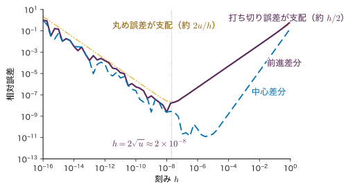

付録A微積分・線形代数・数値計算の補足
本文では，ベクトルで微分する，対称行列を固有ベクトルで分解する，多変量 Gauss 分布をブロックに分けて条件付き分布を求める，連立方程式を Cholesky 分解で解く，といった数学の道具を，結果だけ使って先へ進んだ箇所がある．この付録は，それらの道具を一か所にまとめ，本文で省いた証明と，手で確かめられる小さな数値例を補うものである．
A.1〜A.3 節は行列の記法・ベクトルによる微分・対称行列の対角化，A.4 節は特異値分解，A.5〜A.7 節は Gauss 積分・ブロック行列・Woodbury の公式（多変量 Gauss 分布とガウス過程の計算の土台），A.8〜A.10 節は Lagrange の未定乗数法・Jensen の不等式・ガンマ関数，A.11 節は計算機で数を扱うときの注意（浮動小数点，桁落ち，log-sum-exp，Cholesky 分解，条件数）である．どの節も，その節を使う本文の章・節へのリンクから始める．順に読む必要はなく，本文で「付録A」と書かれた所から必要な節だけを読めばよい．
大学数学（姉妹編）に載っている事項（行列式，逆行列，固有値，Gauss 積分の証明，ガンマ関数など）は要点とリンクにとどめ，載っていない事項（対称行列の直交対角化の証明，正定値行列，特異値分解，Schur 補行列，Woodbury の公式，数値計算）を詳しく書く．各節の例題は 2×2 か 3×3 の行列で手計算できるように作ってある．
A.1 ベクトル・行列の記法と形のそろえ方
本文で使う箇所：全章．特に 第8章 8.2（計画行列と正規方程式），第10章 10.2（Gram 行列），第14章 14.3（層と行列の形），第24章 24.2（系列を行に並べる規約）．行列の積・転置・行列式の基本は 大学数学 第8章 8.1 にある．
A.1.1 本書の約束
- ベクトルは列ベクトル：$\bm{x}\in\R^{D}$ は $D$ 個の実数を縦に並べたもの（$D\times1$ の行列）で，成分を $x_1,\dots,x_D$ と書く．横に並べたものは転置 $\bm{x}^{\tp}$（$1\times D$）で表す．
- 行列：$\bm{A}\in\R^{m\times n}$ は $m$ 行 $n$ 列で，$(i,j)$ 成分を $A_{ij}$ と書く．単位行列 $\bm{I}$ の大きさを明示したいときは $\bm{I}_n$ と書く．
- 例外：第24〜26章だけは，原論文に合わせて系列を行に並べた行列 $\bm{X}\in\R^{T\times d_{\mathrm{model}}}$（第 $t$ 行が位置 $t$ のベクトル）を使い，線形変換を右から掛ける（$\bm{Q}=\bm{X}\bm{W}_Q$）．列ベクトルの規約での $\bm{q}_t=\bm{W}_Q^{\tp}\bm{x}_t$ を行に並べたものと同じである．
行列の積 $\bm{C}=\bm{A}\bm{B}$ は，$\bm{A}\in\R^{m\times n}$，$\bm{B}\in\R^{n\times p}$ のように内側の大きさ $n$ がそろっているときだけ定義され，結果は $\bm{C}\in\R^{m\times p}$，成分は
\begin{equation} \begin{aligned}&C_{ik}=\sum_{j=1}^{n}A_{ij}B_{jk}\\ &(i=1,\dots,m,\ k=1,\dots,p)\end{aligned} \label{eq:A-matmul} \end{equation}である．式を書いたら，各項の大きさを書き出して「内側がそろっているか」「足し合わせる項どうしの大きさが同じか」を確かめる．この確認だけで，転置の付け忘れの多くが見つかる．
A.1.2 内積・外積・転置・トレース
同じ大きさの $\bm{a},\bm{b}\in\R^{n}$ について，
- 内積 $\bm{a}^{\tp}\bm{b}=\sum_{i}a_ib_i$ は $(1\times n)(n\times1)=1\times1$，つまりスカラーである．$\bm{a}^{\tp}\bm{b}=\bm{b}^{\tp}\bm{a}$．長さの 2 乗は $\norm{\bm{a}}^{2}=\bm{a}^{\tp}\bm{a}$．
- 外積（直積）$\bm{a}\bm{b}^{\tp}$ は $(n\times1)(1\times n)=n\times n$ の行列で，$(i,j)$ 成分は $a_ib_j$．階数は（$\bm{a},\bm{b}\ne\bm{0}$ なら）1 である．
積の転置は順序が逆になる：$(\bm{A}\bm{B})^{\tp}=\bm{B}^{\tp}\bm{A}^{\tp}$．成分で確かめると，左辺の $(k,i)$ 成分は $C_{ik}=\sum_jA_{ij}B_{jk}$，右辺の $(k,i)$ 成分は $\sum_j(\bm{B}^{\tp})_{kj}(\bm{A}^{\tp})_{ji}=\sum_jB_{jk}A_{ij}$ で，同じである．逆行列も同様に $(\bm{A}\bm{B})^{-1}=\bm{B}^{-1}\bm{A}^{-1}$（$\bm{A},\bm{B}$ が正則な正方行列のとき．$\bm{A}\bm{B}\bm{B}^{-1}\bm{A}^{-1}=\bm{I}$ で確かめられる）．
正方行列 $\bm{A}\in\R^{n\times n}$ の対角成分の和をトレース $\tr\bm{A}=\sum_iA_{ii}$ という．$\bm{A}\in\R^{m\times n}$，$\bm{B}\in\R^{n\times m}$ について
\begin{equation} \begin{aligned}\tr(\bm{A}\bm{B})&=\sum_{i=1}^{m}\sum_{j=1}^{n}A_{ij}B_{ji}\\&=\sum_{j=1}^{n}\sum_{i=1}^{m}B_{ji}A_{ij}\\&=\tr(\bm{B}\bm{A})\end{aligned} \label{eq:A-trace-cyclic} \end{equation}が成り立つ（$\bm{A}\bm{B}$ は $m\times m$，$\bm{B}\bm{A}$ は $n\times n$ で大きさが違っても等しい）．この性質から，2 次形式（スカラー）をトレースで書き直せる．
$$ \bm{x}^{\tp}\bm{A}\bm{x}=\tr(\bm{x}^{\tp}\bm{A}\bm{x})=\tr(\bm{A}\bm{x}\bm{x}^{\tp}). $$1×1 の行列のトレースはその値そのものなので 1 つ目の等号が成り立ち，2 つ目は式 \eqref{eq:A-trace-cyclic} で $\bm{x}^{\tp}$ を後ろへ回した．期待値と組み合わせると $\Ex[\bm{x}^{\tp}\bm{A}\bm{x}]=\tr(\bm{A}\,\Ex[\bm{x}\bm{x}^{\tp}])$ となり，2 次形式の期待値が共分散行列で書ける．
A.1.3 計画行列は「行がデータ点」
第8章の計画行列 $\bm{\Phi}\in\R^{N\times M}$ は，第 $n$ 行がデータ点 $n$ の特徴ベクトルの転置 $\bm{\phi}_n^{\tp}$（$\bm{\phi}_n=\bm{\phi}(\bm{x}_n)\in\R^{M}$）である．このとき
\begin{equation} \begin{aligned}\bm{\Phi}^{\tp}\bm{\Phi}&=\sum_{n=1}^{N}\bm{\phi}_n\bm{\phi}_n^{\tp}\in\R^{M\times M},\\ \bm{\Phi}^{\tp}\bm{y}&=\sum_{n=1}^{N}\bm{\phi}_n\,y_n\in\R^{M}\end{aligned} \label{eq:A-phi-sum} \end{equation}と，データ点ごとの和に分かれる．$\bm{\Phi}^{\tp}\bm{\Phi}$ の $(i,j)$ 成分は式 \eqref{eq:A-matmul} より $\sum_n\Phi_{ni}\Phi_{nj}=\sum_n\phi_i(\bm{x}_n)\phi_j(\bm{x}_n)$ で，これは外積 $\bm{\phi}_n\bm{\phi}_n^{\tp}$ の $(i,j)$ 成分 $\phi_i(\bm{x}_n)\phi_j(\bm{x}_n)$ を $n$ について足したものに等しい．一方，順序を逆にした $\bm{\Phi}\bm{\Phi}^{\tp}\in\R^{N\times N}$ の $(n,m)$ 成分は $\bm{\phi}_n^{\tp}\bm{\phi}_m$ で，データ点どうしの内積の表（第10章の Gram 行列）である．
| 量 | 大きさ | 章 |
|---|---|---|
| 計画行列 $\bm{\Phi}$ | $N\times M$ | 第8章 |
| $\bm{\Phi}^{\tp}\bm{\Phi}$，係数の事後共分散 $\bm{S}_N$ | $M\times M$ | 第8章 |
| $\bm{\Phi}\bm{\Phi}^{\tp}$，Gram 行列 $\bm{K}$，$\bm{K}_y$ | $N\times N$ | 第10・12章 |
| $\bm{w}$，$\bm{\Phi}^{\tp}\bm{y}$ | $M$（列） | 第8章 |
| $\bm{y}$，$\bm{k}_*$，双対変数 $\bm{a}$ | $N$（列） | 第10・12章 |
| 共分散行列 $\bm{\Sigma}$ | $D\times D$ | 第3章 |
| 重み $\bm{W}^{(l)}$，勾配 $\bm{\delta}^{(l)}\bm{z}^{(l-1)\tp}$ | $D_l\times D_{l-1}$ | 第14・15章 |
| $\bm{Q}\bm{K}^{\tp}$（行の規約） | $T\times T$ | 第24章 |
例題A.1 計画行列の積を二通りに計算する
3 点 $x_n=2,\ 0,\ -1$ に直線の特徴 $\bm{\phi}(x)=(1,x)^{\tp}$ を使うと，$\bm{\Phi}=\begin{pmatrix}1&2\\1&0\\1&-1\end{pmatrix}\in\R^{3\times2}$ である．$\bm{y}=(3,1,0)^{\tp}$ とする．(1) $\bm{\Phi}^{\tp}\bm{\Phi}$，$\bm{\Phi}^{\tp}\bm{y}$，$\bm{\Phi}\bm{\Phi}^{\tp}$ の大きさを書け．(2) $\bm{\Phi}^{\tp}\bm{\Phi}$ を式 \eqref{eq:A-matmul} と式 \eqref{eq:A-phi-sum} の二通りで計算せよ．(3) $\bm{\Phi}\bm{\Phi}^{\tp}$ を求め，$\tr(\bm{\Phi}\bm{\Phi}^{\tp})=\tr(\bm{\Phi}^{\tp}\bm{\Phi})$ を確かめよ．
解答 (1) $\bm{\Phi}^{\tp}\bm{\Phi}$ は $(2\times3)(3\times2)=2\times2$，$\bm{\Phi}^{\tp}\bm{y}$ は $(2\times3)(3\times1)=2\times1$，$\bm{\Phi}\bm{\Phi}^{\tp}$ は $(3\times2)(2\times3)=3\times3$．
(2) 成分で：$(1,1)$ 成分 $=1+1+1=3$，$(1,2)$ 成分 $=1\cdot2+1\cdot0+1\cdot(-1)=1$，$(2,2)$ 成分 $=4+0+1=5$．外積の和で：
$$ \begin{aligned} &\begin{pmatrix}1&2\\2&4\end{pmatrix}+\begin{pmatrix}1&0\\0&0\end{pmatrix}+\begin{pmatrix}1&-1\\-1&1\end{pmatrix}\\ &=\begin{pmatrix}3&1\\1&5\end{pmatrix}. \end{aligned} $$どちらも同じである．$\bm{\Phi}^{\tp}\bm{y}=3\begin{pmatrix}1\\2\end{pmatrix}+1\begin{pmatrix}1\\0\end{pmatrix}+0\begin{pmatrix}1\\-1\end{pmatrix}=\begin{pmatrix}4\\6\end{pmatrix}$．
(3) $(n,m)$ 成分は $\bm{\phi}_n^{\tp}\bm{\phi}_m=1+x_nx_m$ なので
$$ \bm{\Phi}\bm{\Phi}^{\tp}=\begin{pmatrix}5&1&-1\\1&1&1\\-1&1&2\end{pmatrix}. $$トレースは $5+1+2=8$，$\bm{\Phi}^{\tp}\bm{\Phi}$ のトレースは $3+5=8$ で一致する．大きさの違う 2 つの行列でもトレースは等しい（式 \eqref{eq:A-trace-cyclic}）．
A.2 ベクトルによる微分
本文で使う箇所：第7章 7.1（勾配），第8章 8.2（正規方程式），第10章 10.2（Ridge 回帰の勾配），第12章 12.7（対数周辺尤度の勾配），第15章 15.2（誤差逆伝播）．勾配の定義と幾何学的意味は 大学数学 第18章 18.4，偏微分は 第6章 6.2 にある．
A.2.1 定義：勾配は元のベクトルと同じ形
定義A.1 スカラー関数のベクトルによる微分
$\bm{w}\in\R^{M}$ のスカラー値関数 $f(\bm{w})$ について，偏微分を縦に並べた列ベクトル
$$ \pdiff{f}{\bm{w}}\equiv\nabla f(\bm{w})=\begin{pmatrix}\partial f/\partial w_1\\ \vdots\\ \partial f/\partial w_M\end{pmatrix}\in\R^{M} $$を $f$ の $\bm{w}$ による微分（勾配）という．行列 $\bm{W}\in\R^{m\times n}$ による微分 $\partial f/\partial\bm{W}$ も，$(i,j)$ 成分を $\partial f/\partial W_{ij}$ とする $m\times n$ の行列と定める．
本書は「微分の結果は微分する変数と同じ形」という約束で統一している（文献によっては行ベクトルにする流儀もあるので，他書の公式を使うときは転置に注意する）．この約束のもとでは，更新式 $\bm{w}\leftarrow\bm{w}-\eta\,\partial L/\partial\bm{w}$ の両辺の形が自然にそろう．
A.2.2 基本の公式と成分での導出
公式A.1 よく使うベクトルによる微分
$\bm{a}\in\R^{M}$，$\bm{A}\in\R^{M\times M}$，$\bm{y}\in\R^{N}$，$\bm{\Phi}\in\R^{N\times M}$ を $\bm{w}$ によらない定数とする．
$$ \begin{aligned} &\text{(1)}\quad \pdiff{(\bm{a}^{\tp}\bm{w})}{\bm{w}}=\pdiff{(\bm{w}^{\tp}\bm{a})}{\bm{w}}=\bm{a},\\ &\text{(2)}\quad \pdiff{(\bm{w}^{\tp}\bm{A}\bm{w})}{\bm{w}}=(\bm{A}+\bm{A}^{\tp})\bm{w},\\ &\text{(3)}\quad \pdiff{}{\bm{w}}\,\frac12\norm{\bm{y}-\bm{\Phi}\bm{w}}^{2}=-\bm{\Phi}^{\tp}(\bm{y}-\bm{\Phi}\bm{w}). \end{aligned} $$$\bm{A}$ が対称なら (2) は $2\bm{A}\bm{w}$ になる．
導出
(1) $\bm{a}^{\tp}\bm{w}=\sum_{i=1}^{M}a_iw_i$ を $w_k$ で偏微分すると，$i=k$ の項だけが残って $a_k$．これを $k=1,\dots,M$ について縦に並べると $\bm{a}$ である．
(2) 2 次形式を成分で書くと $\bm{w}^{\tp}\bm{A}\bm{w}=\sum_{i=1}^{M}\sum_{j=1}^{M}w_iA_{ij}w_j$．$w_k$ で偏微分するとき，積 $w_iw_j$ の微分は $\dfrac{\partial w_i}{\partial w_k}w_j+w_i\dfrac{\partial w_j}{\partial w_k}$ で，$\partial w_i/\partial w_k$ は $i=k$ のとき 1，それ以外は 0 である．したがって
$$ \begin{aligned} \pdiff{}{w_k}\sum_{i,j}w_iA_{ij}w_j &=\sum_{j}A_{kj}w_j+\sum_{i}w_iA_{ik}\\ &=(\bm{A}\bm{w})_k+(\bm{A}^{\tp}\bm{w})_k . \end{aligned} $$第 1 項は「$i=k$ の項」から，第 2 項は「$j=k$ の項」から来る．縦に並べて $(\bm{A}+\bm{A}^{\tp})\bm{w}$．
(3) $\bm{r}=\bm{y}-\bm{\Phi}\bm{w}$ とおいて展開する．$\bm{w}^{\tp}\bm{\Phi}^{\tp}\bm{y}$ はスカラーなので転置しても同じで $\bm{y}^{\tp}\bm{\Phi}\bm{w}$ に等しいことを使うと
$$ \begin{aligned} \frac12\bm{r}^{\tp}\bm{r} &=\frac12\bigl(\bm{y}^{\tp}\bm{y}-2\,\bm{y}^{\tp}\bm{\Phi}\bm{w}+\bm{w}^{\tp}\bm{\Phi}^{\tp}\bm{\Phi}\bm{w}\bigr). \end{aligned} $$第 1 項は $\bm{w}$ によらない．第 2 項は (1) で $\bm{a}=\bm{\Phi}^{\tp}\bm{y}$ とした形，第 3 項は (2) で $\bm{A}=\bm{\Phi}^{\tp}\bm{\Phi}$（対称）とした形なので，微分は $\frac12\bigl(-2\bm{\Phi}^{\tp}\bm{y}+2\bm{\Phi}^{\tp}\bm{\Phi}\bm{w}\bigr)=-\bm{\Phi}^{\tp}(\bm{y}-\bm{\Phi}\bm{w})$．これを $\bm{0}$ とおいたものが第8章の正規方程式 $\bm{\Phi}^{\tp}\bm{\Phi}\bm{w}=\bm{\Phi}^{\tp}\bm{y}$ である．Ridge 回帰の罰則 $\frac{\lambda}{2}\norm{\bm{w}}^{2}=\frac{\lambda}{2}\bm{w}^{\tp}\bm{I}\bm{w}$ の微分は (2) より $\lambda\bm{w}$．
（導出終わり）
2 回微分を並べた行列（Hesse 行列）$\bm{H}$ の $(k,l)$ 成分は $\partial^{2}f/\partial w_k\partial w_l$ である．(2) の勾配の第 $k$ 成分 $\sum_j(A_{kj}+A_{jk})w_j$ を $w_l$ で微分すると $A_{kl}+A_{lk}$ なので，$\bm{w}^{\tp}\bm{A}\bm{w}$ の Hesse 行列は $\bm{A}+\bm{A}^{\tp}$，(3) の Hesse 行列は $\bm{\Phi}^{\tp}\bm{\Phi}$ である（第7章で勾配降下法の収束を決めた行列）．
A.2.3 連鎖律と行列による微分
$\bm{z}=\bm{g}(\bm{w})\in\R^{K}$ を経由して $f(\bm{z})$ が決まるとき，$\partial z_i/\partial w_j$ を $(i,j)$ 成分とする $K\times M$ の行列（Jacobi 行列）を $\bm{J}$ とすると，連鎖律 $\dfrac{\partial f}{\partial w_j}=\sum_{i}\dfrac{\partial f}{\partial z_i}\dfrac{\partial z_i}{\partial w_j}$ は
\begin{equation} \pdiff{f}{\bm{w}}=\bm{J}^{\tp}\,\pdiff{f}{\bm{z}} \label{eq:A-chain} \end{equation}と書ける（$(M\times K)(K\times1)=M\times1$ で形がそろう）．例えば $\bm{z}=\bm{\Phi}\bm{w}$ なら $\bm{J}=\bm{\Phi}$ で，$f=\frac12\norm{\bm{y}-\bm{z}}^{2}$ の $\partial f/\partial\bm{z}=-(\bm{y}-\bm{z})$ から公式A.1 (3) がもう一度出る．
ニューラルネットワークの 1 層 $\bm{a}=\bm{W}\bm{z}+\bm{b}$（$\bm{W}\in\R^{D_l\times D_{l-1}}$）では，$a_i=\sum_jW_{ij}z_j+b_i$ なので $W_{ij}$ が影響するのは $a_i$ だけで，$\partial a_i/\partial W_{ij}=z_j$．よって $\delta_i\equiv\partial L/\partial a_i$ とおくと $\partial L/\partial W_{ij}=\delta_iz_j$，行列で書けば外積 $\partial L/\partial\bm{W}=\bm{\delta}\bm{z}^{\tp}$ である（第15章の誤差逆伝播の式．形は $(D_l\times1)(1\times D_{l-1})$ で $\bm{W}$ と同じ）．
A.2.4 行列の関数の微分 — 逆行列と行列式
ガウス過程のハイパーパラメーターの学習（第12章 12.7）では，行列 $\bm{K}(\theta)\in\R^{N\times N}$（対称正定値，A.3 節）がスカラー $\theta$ に依存するときの微分が必要になる．$\bm{K}'\equiv\partial\bm{K}/\partial\theta$ は成分ごとの微分である．
公式A.2 逆行列と対数行列式の微分
\begin{align} \pdiff{\bm{K}^{-1}}{\theta}&=-\bm{K}^{-1}\bm{K}'\bm{K}^{-1} \label{eq:A-dinv}\\ \pdiff{\ln\abs{\bm{K}}}{\theta}&=\tr\bigl(\bm{K}^{-1}\bm{K}'\bigr) \label{eq:A-dlogdet} \end{align}証明
式 \eqref{eq:A-dinv}：$\bm{K}\bm{K}^{-1}=\bm{I}$ の両辺を $\theta$ で微分する．積の微分は行列でも順序を保って成り立つ（成分 $\sum_jK_{ij}(K^{-1})_{jk}$ に積の微分を使えばよい）ので
$$ \bm{K}'\bm{K}^{-1}+\bm{K}\,\pdiff{\bm{K}^{-1}}{\theta}=\bm{O}. $$左から $\bm{K}^{-1}$ を掛けて移項すると式 \eqref{eq:A-dinv} を得る．
式 \eqref{eq:A-dlogdet}：小さな $h$ について $\bm{K}(\theta+h)=\bm{K}+h\bm{K}'+O(h^{2})$ である．$\bm{M}\equiv\bm{K}^{-1}\bm{K}'$ とおくと $\bm{K}(\theta+h)=\bm{K}\bigl(\bm{I}+h\bm{M}+O(h^{2})\bigr)$ なので，行列式の積の性質（大学数学 第8章 8.5）から
$$ \abs{\bm{K}(\theta+h)}=\abs{\bm{K}}\,\abs{\bm{I}+h\bm{M}+O(h^{2})}. $$右の行列式を，行列式の定義（置換 $\sigma$ についての和）$\sum_{\sigma}\sgn(\sigma)\prod_{i}\bigl(\delta_{i\sigma(i)}+hM_{i\sigma(i)}+O(h^{2})\bigr)$ で調べる．恒等置換の項は $\prod_i(1+hM_{ii}+O(h^{2}))$ $=1+h\sum_iM_{ii}+O(h^{2})$．恒等置換でない $\sigma$ は少なくとも 2 つの添字 $i$ で $\sigma(i)\ne i$ となり，その因子は $\delta_{i\sigma(i)}=0$ のため $O(h)$ なので，項全体は $O(h^{2})$ である．よって
$$ \abs{\bm{I}+h\bm{M}+O(h^{2})}=1+h\tr\bm{M}+O(h^{2}). $$$\abs{\bm{K}}\gt0$ として対数をとり，$\ln(1+\epsilon)=\epsilon+O(\epsilon^{2})$ を使うと
$$ \begin{aligned}&\ln\abs{\bm{K}(\theta+h)}-\ln\abs{\bm{K}(\theta)}\\&=h\tr\bm{M}+O(h^{2}).\end{aligned} $$両辺を $h$ で割って $h\to0$ とすれば式 \eqref{eq:A-dlogdet} である．
（証明終わり）
例題A.2 成分で確かめる
(1) $\bm{A}=\begin{pmatrix}1&2\\0&3\end{pmatrix}$（対称でない）について，$f(\bm{w})=\bm{w}^{\tp}\bm{A}\bm{w}$ を成分で書いて勾配を求め，公式A.1 (2) と一致することを確かめよ．$\bm{w}=(1,1)^{\tp}$ での値も求めよ．(2) $\bm{K}(\theta)=\begin{pmatrix}1+\theta&1/2\\1/2&1\end{pmatrix}$ について，$\theta=0$ での $\partial\ln\abs{\bm{K}}/\partial\theta$ を直接と式 \eqref{eq:A-dlogdet} の両方で求めよ．
解答 (1) $f=w_1^{2}+2w_1w_2+3w_2^{2}$（$A_{21}=0$ なので交差項は $A_{12}w_1w_2=2w_1w_2$ だけ）．偏微分して
$$ \pdiff{f}{\bm{w}}=\begin{pmatrix}2w_1+2w_2\\2w_1+6w_2\end{pmatrix}. $$一方 $\bm{A}+\bm{A}^{\tp}=\begin{pmatrix}2&2\\2&6\end{pmatrix}$ で，$(\bm{A}+\bm{A}^{\tp})\bm{w}$ は上と同じ．$\bm{w}=(1,1)^{\tp}$ では $(4,8)^{\tp}$．なお $2\bm{A}\bm{w}=(6,6)^{\tp}$ は誤りで，対称でない行列に「$2\bm{A}\bm{w}$」を使ってはいけない．
(2) 直接：$\abs{\bm{K}}=(1+\theta)\cdot1-\frac14=\frac34+\theta$ なので $\partial\ln\abs{\bm{K}}/\partial\theta=1/(\frac34+\theta)$，$\theta=0$ で $\frac43$．公式で：$\theta=0$ では $\bm{K}'=\begin{pmatrix}1&0\\0&0\end{pmatrix}$ で
$$ \begin{aligned} \bm{K}^{-1}&=\frac{1}{3/4}\begin{pmatrix}1&-1/2\\-1/2&1\end{pmatrix}\\ &=\begin{pmatrix}4/3&-2/3\\-2/3&4/3\end{pmatrix},\\ \bm{K}^{-1}\bm{K}'&=\begin{pmatrix}4/3&0\\-2/3&0\end{pmatrix},\\ \tr(\bm{K}^{-1}\bm{K}')&=\frac43 . \end{aligned} $$一致する．$\bm{K}'$ が $(1,1)$ 成分だけを動かすので，答えは $(\bm{K}^{-1})_{11}$ そのものである．
A.3 固有値分解・対称行列の対角化・正定値行列
本文で使う箇所：第3章 3.6（共分散行列の固有値と楕円），第7章 7.2（Hesse 行列の固有ベクトルの座標），第10章 10.4（半正定値の Gram 行列），第12章 12.8（正定値の $\bm{K}_y$），第18章 18.2（PCA）．固有値・固有ベクトルの定義と求め方，一般の行列の対角化は 大学数学 第12章 12.1，12.3 にある．ここでは大学数学に無い「対称行列は直交行列で対角化できる」ことの証明と，正定値行列を扱う．
A.3.1 実対称行列の対角化
正方行列 $\bm{Q}\in\R^{D\times D}$ が $\bm{Q}^{\tp}\bm{Q}=\bm{I}$ を満たすとき直交行列という．列 $\bm{q}_1,\dots,\bm{q}_D$ が互いに直交する長さ 1 のベクトル（正規直交系）であることと同じで，$\bm{Q}^{-1}=\bm{Q}^{\tp}$，$\bm{Q}\bm{Q}^{\tp}=\bm{I}$，つまり $\sum_i\bm{q}_i\bm{q}_i^{\tp}=\bm{I}$ も成り立つ．直交行列を掛けても長さは変わらない（$\norm{\bm{Q}\bm{x}}^{2}=\bm{x}^{\tp}\bm{Q}^{\tp}\bm{Q}\bm{x}=\norm{\bm{x}}^{2}$）．
定理A.3 実対称行列の直交対角化（スペクトル定理）
$\bm{S}\in\R^{D\times D}$ が対称（$\bm{S}^{\tp}=\bm{S}$）ならば，次が成り立つ．
(1) 固有値はすべて実数で，固有ベクトルは実ベクトルにとれる．
(2) 異なる固有値に属する固有ベクトルは直交する．
(3) 直交行列 $\bm{Q}=(\bm{q}_1,\dots,\bm{q}_D)$ と実数 $\lambda_1,\dots,\lambda_D$ があって
$$ \begin{aligned}\bm{S}&=\bm{Q}\bm{\Lambda}\bm{Q}^{\tp}=\sum_{i=1}^{D}\lambda_i\bm{q}_i\bm{q}_i^{\tp},\\ \bm{\Lambda}&=\diag(\lambda_1,\dots,\lambda_D).\end{aligned} $$$\bm{S}\bm{q}_i=\lambda_i\bm{q}_i$ で，$\bm{q}_i$ は正規直交系である（固有値が重なっていても成り立つ）．
証明
(1) 固有方程式 $\abs{\bm{S}-\lambda\bm{I}}=0$ は $\lambda$ の $D$ 次方程式なので，代数学の基本定理により複素数の根 $\lambda$ を少なくとも 1 つ持つ．対応する固有ベクトル $\bm{v}\in\mathbb{C}^{D}$（$\bm{v}\ne\bm{0}$）について $\bm{S}\bm{v}=\lambda\bm{v}$．$\bm{S}$ は実行列なので，両辺の複素共役をとると $\bm{S}\bar{\bm{v}}=\bar{\lambda}\bar{\bm{v}}$．スカラー $\bar{\bm{v}}^{\tp}\bm{S}\bm{v}$ を二通りに計算する．
$$ \begin{aligned} \bar{\bm{v}}^{\tp}\bm{S}\bm{v}&=\bar{\bm{v}}^{\tp}(\lambda\bm{v})=\lambda\,\bar{\bm{v}}^{\tp}\bm{v},\\ \bar{\bm{v}}^{\tp}\bm{S}\bm{v}&=(\bm{S}^{\tp}\bar{\bm{v}})^{\tp}\bm{v}=(\bm{S}\bar{\bm{v}})^{\tp}\bm{v}=\bar{\lambda}\,\bar{\bm{v}}^{\tp}\bm{v}. \end{aligned} $$2 行目で $\bm{S}^{\tp}=\bm{S}$ を使った．$\bar{\bm{v}}^{\tp}\bm{v}=\sum_i\abs{v_i}^{2}\gt0$ なので $\lambda=\bar{\lambda}$，すなわち $\lambda$ は実数である．すると $\bm{S}-\lambda\bm{I}$ は正則でない実行列なので，$(\bm{S}-\lambda\bm{I})\bm{u}=\bm{0}$ を満たす実ベクトル $\bm{u}\ne\bm{0}$ がある（掃き出し法を実数の範囲で行えばよい．大学数学 第9章 9.3）．
(2) $\bm{S}\bm{u}=\lambda\bm{u}$，$\bm{S}\bm{v}=\mu\bm{v}$，$\lambda\ne\mu$ とする．$\bm{u}^{\tp}\bm{S}\bm{v}=\mu\,\bm{u}^{\tp}\bm{v}$．一方 $\bm{u}^{\tp}\bm{S}\bm{v}=(\bm{S}\bm{u})^{\tp}\bm{v}=\lambda\,\bm{u}^{\tp}\bm{v}$．差をとると $(\lambda-\mu)\bm{u}^{\tp}\bm{v}=0$ で，$\lambda\ne\mu$ から $\bm{u}^{\tp}\bm{v}=0$．
(3) $D$ についての帰納法で示す．$D=1$ では $\bm{S}=(s)$，$\bm{Q}=(1)$ でよい．$D-1$ 次で成り立つとする．(1) より実の固有値 $\lambda_1$ と長さ 1 の実の固有ベクトル $\bm{q}_1$ がある．$\bm{q}_1$ に $D-1$ 本のベクトルを足して $\R^{D}$ の正規直交基底を作り（Gram–Schmidt の直交化），後の $D-1$ 本を並べた行列を $\bm{P}_2\in\R^{D\times(D-1)}$ とする．$\bm{P}=(\bm{q}_1,\bm{P}_2)$ は直交行列で，$\bm{P}_2^{\tp}\bm{q}_1=\bm{0}$ である．このとき
$$ \bm{P}^{\tp}\bm{S}\bm{P}=\begin{pmatrix}\bm{q}_1^{\tp}\bm{S}\bm{q}_1&\bm{q}_1^{\tp}\bm{S}\bm{P}_2\\ \bm{P}_2^{\tp}\bm{S}\bm{q}_1&\bm{P}_2^{\tp}\bm{S}\bm{P}_2\end{pmatrix}. $$左上は $\bm{q}_1^{\tp}(\lambda_1\bm{q}_1)=\lambda_1$，左下は $\bm{P}_2^{\tp}(\lambda_1\bm{q}_1)=\bm{0}$，右上は左下の転置（$\bm{S}$ が対称なので）で $\bm{0}^{\tp}$ である．右下の $\bm{S}_2\equiv\bm{P}_2^{\tp}\bm{S}\bm{P}_2\in\R^{(D-1)\times(D-1)}$ は対称なので，帰納法の仮定から直交行列 $\bm{Q}_2$ で $\bm{Q}_2^{\tp}\bm{S}_2\bm{Q}_2=\diag(\lambda_2,\dots,\lambda_D)$ とできる．
$$ \bm{Q}=\bm{P}\begin{pmatrix}1&\bm{0}^{\tp}\\ \bm{0}&\bm{Q}_2\end{pmatrix} $$とおくと，直交行列の積なので $\bm{Q}$ も直交行列であり，$\bm{Q}^{\tp}\bm{S}\bm{Q}=\diag(\lambda_1,\lambda_2,\dots,\lambda_D)$．左から $\bm{Q}$，右から $\bm{Q}^{\tp}$ を掛けると $\bm{S}=\bm{Q}\bm{\Lambda}\bm{Q}^{\tp}$ である．$\bm{Q}\bm{\Lambda}\bm{Q}^{\tp}$ を列で書けば $\sum_i\lambda_i\bm{q}_i\bm{q}_i^{\tp}$．
（証明終わり）
この分解から，本文で使う次の事実がすぐに出る（$\bm{q}_i^{\tp}\bm{q}_j$ が $i=j$ で 1，それ以外で 0 であることを使う）．
- 逆行列とべき：すべての $\lambda_i\ne0$ なら $\bm{S}^{-1}=\sum_i\lambda_i^{-1}\bm{q}_i\bm{q}_i^{\tp}$．$\bm{S}$ と掛けると $\sum_i\bm{q}_i\bm{q}_i^{\tp}=\bm{I}$ になることで確かめられる．同様に $\bm{S}^{k}=\sum_i\lambda_i^{k}\bm{q}_i\bm{q}_i^{\tp}$．
- トレースと行列式：$\tr\bm{S}=\tr(\bm{\Lambda}\bm{Q}^{\tp}\bm{Q})=\sum_i\lambda_i$（式 \eqref{eq:A-trace-cyclic}），$\abs{\bm{S}}=\abs{\bm{Q}}\abs{\bm{\Lambda}}\abs{\bm{Q}^{\tp}}=\prod_i\lambda_i$（$\abs{\bm{Q}}^{2}=\abs{\bm{Q}^{\tp}\bm{Q}}=1$）．
- 2 次形式：$c_i\equiv\bm{q}_i^{\tp}\bm{x}$（$\bm{x}$ の $\bm{q}_i$ 方向の座標）とおくと
2 つ目の等式は $\norm{\bm{Q}^{\tp}\bm{x}}=\norm{\bm{x}}$ による．第3章の Mahalanobis 距離の楕円，第7章の「固有ベクトルの向きごとに独立に収束する」は，どちらもこの式の読み替えである．
A.3.2 正定値行列
定義A.2 正定値・半正定値
対称行列 $\bm{S}\in\R^{D\times D}$ が，すべての $\bm{x}\ne\bm{0}$ について $\bm{x}^{\tp}\bm{S}\bm{x}\gt0$ を満たすとき正定値，$\bm{x}^{\tp}\bm{S}\bm{x}\ge0$ を満たすとき半正定値という．
定理A.4 正定値と固有値
対称行列 $\bm{S}$ が正定値であることと，固有値がすべて正であることは同値である（半正定値と「すべて 0 以上」も同値）．正定値なら $\bm{S}$ は正則で $\abs{\bm{S}}\gt0$，$\bm{S}^{-1}$ も正定値，対角成分はすべて正である．
証明
すべての $\lambda_i\gt0$ とする．$\bm{x}\ne\bm{0}$ なら式 \eqref{eq:A-quad-eig} で $\sum_ic_i^{2}=\norm{\bm{x}}^{2}\gt0$ だから少なくとも 1 つの $c_i\ne0$ で，$\bm{x}^{\tp}\bm{S}\bm{x}=\sum_i\lambda_ic_i^{2}\gt0$．逆に正定値なら，$\bm{x}=\bm{q}_i$ とおいて $\lambda_i=\bm{q}_i^{\tp}\bm{S}\bm{q}_i\gt0$．後半：$\abs{\bm{S}}=\prod\lambda_i\gt0$，$\bm{S}^{-1}$ の固有値 $1/\lambda_i\gt0$，対角成分 $S_{ii}=\bm{e}_i^{\tp}\bm{S}\bm{e}_i\gt0$（$\bm{e}_i$ は第 $i$ 成分だけ 1 の単位ベクトル）．
（証明終わり）
本書に現れる正定値・半正定値の行列は次のとおりである．
- $\bm{\Phi}^{\tp}\bm{\Phi}$ は半正定値：$\bm{x}^{\tp}\bm{\Phi}^{\tp}\bm{\Phi}\bm{x}=\norm{\bm{\Phi}\bm{x}}^{2}\ge0$．$\bm{\Phi}$ の列が線形独立なら $\bm{x}\ne\bm{0}$ で $\bm{\Phi}\bm{x}\ne\bm{0}$ なので正定値．同じ理由で Gram 行列 $\bm{\Phi}\bm{\Phi}^{\tp}$ も半正定値．
- 共分散行列は半正定値：$\bm{a}^{\tp}\bm{\Sigma}\bm{a}=\Var[\bm{a}^{\tp}\bm{x}]\ge0$（第2章 2.5 節）．
- $\bm{K}$ が半正定値で $\sigma^{2}\gt0$ なら $\bm{K}_y=\bm{K}+\sigma^{2}\bm{I}$ は正定値で，固有値は $\sigma^{2}$ 以上（$\bm{K}$ の固有ベクトルは $\bm{K}_y$ の固有ベクトルでもあり，固有値が $\sigma^{2}$ だけ増える）．Ridge 回帰の $\bm{\Phi}^{\tp}\bm{\Phi}+\lambda\bm{I}$ も同じ．
2×2 の対称行列 $\bm{S}=\begin{pmatrix}a&b\\b&c\end{pmatrix}$ では，正定値であることは「$a\gt0$ かつ $ac-b^{2}\gt0$」と同値である．$a\gt0$ のとき平方完成で
$$ \begin{aligned} &ax_1^{2}+2bx_1x_2+cx_2^{2}\\ &=a\Bigl(x_1+\frac{b}{a}x_2\Bigr)^{2}+\frac{ac-b^{2}}{a}x_2^{2} \end{aligned} $$と書けることから分かる（$a\le0$ なら $\bm{x}=(1,0)^{\tp}$ で正にならない）．一般の大きさでは「左上から切り出した小行列の行列式がすべて正」という判定法（Sylvester の判定法）があるが，計算機では A.11 節の Cholesky 分解が成功するかどうかで判定するのが実際的である．
半正定値の $\bm{S}$ には，$\bm{S}^{1/2}\equiv\sum_i\sqrt{\lambda_i}\,\bm{q}_i\bm{q}_i^{\tp}$ という「平方根」がある（$(\bm{S}^{1/2})^{2}=\bm{S}$ は上のべきの式で確かめられる）．相関のある Gauss 乱数を作るときには，計算の軽い Cholesky 分解 $\bm{L}$（$\bm{S}=\bm{L}\bm{L}^{\tp}$，A.11 節）を平方根の代わりに使う．
A.3.3 Rayleigh 商 — 2 次形式の最大と最小
長さ 1 のベクトル $\bm{u}$ について，式 \eqref{eq:A-quad-eig} で $\sum_ic_i^{2}=1$ なので，$\bm{u}^{\tp}\bm{S}\bm{u}=\sum_i\lambda_ic_i^{2}$ は固有値の重み付き平均である．固有値を大きい順 $\lambda_1\ge\dots\ge\lambda_D$ に並べると
\begin{equation} \lambda_D\le\bm{u}^{\tp}\bm{S}\bm{u}\le\lambda_1 \label{eq:A-rayleigh} \end{equation}で，上限は $\bm{u}=\bm{q}_1$，下限は $\bm{u}=\bm{q}_D$ でちょうど達する．第18章の PCA（射影の分散 $\bm{u}^{\tp}\bm{S}\bm{u}$ を最大にする向きは最大固有値の固有ベクトル），第7章の学習率の上限（最も急な向きの曲率が $\lambda_{\max}$）はこの不等式による．Lagrange の未定乗数法による同じ結果の導き方は A.8 節の例題A.8 にある．
例題A.3 2×2 の対称行列を対角化する
$\bm{S}=\begin{pmatrix}5&2\\2&2\end{pmatrix}$ について，(1) 固有値と長さ 1 の固有ベクトルを求め，直交することを確かめよ．(2) $\bm{S}=\sum_i\lambda_i\bm{q}_i\bm{q}_i^{\tp}$ を確かめ，正定値かどうかを判定せよ．(3) $\bm{S}^{-1}$ を固有値分解から求め，2×2 の逆行列の公式と比べよ．(4) $\bm{x}=(1,1)^{\tp}$ の 2 次形式を直接と式 \eqref{eq:A-quad-eig} の両方で計算せよ．
解答 (1) $\abs{\bm{S}-\lambda\bm{I}}=(5-\lambda)(2-\lambda)-4$ $=\lambda^{2}-7\lambda+6$ $=(\lambda-6)(\lambda-1)$ より $\lambda_1=6$，$\lambda_2=1$．$\lambda=6$：$(5-6)x+2y=0$ より $y=x/2$，$\bm{q}_1=(2,1)^{\tp}/\sqrt5$．$\lambda=1$：$4x+2y=0$ より $y=-2x$，$\bm{q}_2=(1,-2)^{\tp}/\sqrt5$．$\bm{q}_1^{\tp}\bm{q}_2=(2-2)/5=0$．
(2) $\bm{q}_1\bm{q}_1^{\tp}=\frac15\begin{pmatrix}4&2\\2&1\end{pmatrix}$，$\bm{q}_2\bm{q}_2^{\tp}=\frac15\begin{pmatrix}1&-2\\-2&4\end{pmatrix}$ なので
$$ \begin{aligned} 6\,\bm{q}_1\bm{q}_1^{\tp}+1\,\bm{q}_2\bm{q}_2^{\tp} &=\frac15\begin{pmatrix}24+1&12-2\\12-2&6+4\end{pmatrix}\\ &=\begin{pmatrix}5&2\\2&2\end{pmatrix}. \end{aligned} $$固有値が 6 と 1 でどちらも正なので正定値（2×2 の判定でも $a=5\gt0$，$ac-b^{2}=6\gt0$）．
(3) 固有値分解から
$$ \begin{aligned} \bm{S}^{-1}&=\frac16\bm{q}_1\bm{q}_1^{\tp}+\bm{q}_2\bm{q}_2^{\tp}\\ &=\frac{1}{30}\begin{pmatrix}4&2\\2&1\end{pmatrix}+\frac{1}{30}\begin{pmatrix}6&-12\\-12&24\end{pmatrix}\\ &=\begin{pmatrix}1/3&-1/3\\-1/3&5/6\end{pmatrix}. \end{aligned} $$逆行列の公式では $\frac{1}{\abs{\bm{S}}}\begin{pmatrix}2&-2\\-2&5\end{pmatrix}$ で $\abs{\bm{S}}=10-4=6$ なので同じ．
(4) 直接：$5+2\cdot2\cdot1\cdot1+2=11$．固有値で：$c_1=\bm{q}_1^{\tp}\bm{x}=3/\sqrt5$，$c_2=-1/\sqrt5$ なので $6\cdot\frac95+1\cdot\frac15=\frac{55}{5}=11$．$c_1^{2}+c_2^{2}=2=\norm{\bm{x}}^{2}$ も成り立っている．
A.4 特異値分解
本文で使う箇所：第8章 8.5（定義8.3，条件数，SVD による最小二乗），8.6（Ridge 回帰は特異値ごとに縮める），第10章 10.2（$\bm{\Phi}^{\tp}\bm{\Phi}$ と $\bm{\Phi}\bm{\Phi}^{\tp}$），第18章 18.4（PCA と SVD）．大学数学には無い事項なので，存在の証明から書く．
A.4.1 存在の証明
固有値分解は正方行列についての話だったが，特異値分解（singular value decomposition，SVD）はどんな形の行列にも使える．
定理A.5 特異値分解
任意の $\bm{A}\in\R^{N\times M}$ について，その階数を $r$ とすると，正規直交系 $\bm{v}_1,\dots,\bm{v}_r\in\R^{M}$，正規直交系 $\bm{u}_1,\dots,\bm{u}_r\in\R^{N}$，正の数 $s_1\ge s_2\ge\dots\ge s_r\gt0$ があって
$$ \begin{aligned}&\bm{A}=\sum_{i=1}^{r}s_i\,\bm{u}_i\bm{v}_i^{\tp},\\ &\bm{A}\bm{v}_i=s_i\bm{u}_i,\quad \bm{A}^{\tp}\bm{u}_i=s_i\bm{v}_i\end{aligned} $$と書ける．$s_i$ を特異値，$\bm{u}_i$，$\bm{v}_i$ を左・右の特異ベクトルという．
証明
$\bm{A}^{\tp}\bm{A}\in\R^{M\times M}$ は対称で半正定値（A.3.2 項）である．定理A.3 から，正規直交する固有ベクトル $\bm{v}_1,\dots,\bm{v}_M$ と固有値 $\mu_1\ge\dots\ge\mu_M\ge0$ がある．正の固有値の個数を $r$ とし，$i\le r$ について
$$ s_i\equiv\sqrt{\mu_i}\gt0,\qquad \bm{u}_i\equiv\frac{\bm{A}\bm{v}_i}{s_i}\in\R^{N} $$と定める．
$\bm{u}_i$ は正規直交：$\bm{u}_i^{\tp}\bm{u}_j=\dfrac{\bm{v}_i^{\tp}\bm{A}^{\tp}\bm{A}\bm{v}_j}{s_is_j}=\dfrac{\mu_j\,\bm{v}_i^{\tp}\bm{v}_j}{s_is_j}$ で，$i\ne j$ なら $\bm{v}_i^{\tp}\bm{v}_j=0$，$i=j$ なら $\mu_i/s_i^{2}=1$．
$i\gt r$ では $\bm{A}\bm{v}_i=\bm{0}$：$\norm{\bm{A}\bm{v}_i}^{2}=\bm{v}_i^{\tp}\bm{A}^{\tp}\bm{A}\bm{v}_i=\mu_i=0$．
分解：$\bm{v}_i$ は正規直交基底なので $\sum_{i=1}^{M}\bm{v}_i\bm{v}_i^{\tp}=\bm{I}_M$．右から $\bm{A}$ に掛けて
$$ \begin{aligned}\bm{A}&=\bm{A}\sum_{i=1}^{M}\bm{v}_i\bm{v}_i^{\tp}=\sum_{i=1}^{M}(\bm{A}\bm{v}_i)\bm{v}_i^{\tp}\\&=\sum_{i=1}^{r}s_i\bm{u}_i\bm{v}_i^{\tp}.\end{aligned} $$また $\bm{A}^{\tp}\bm{u}_i=\bm{A}^{\tp}\bm{A}\bm{v}_i/s_i=\mu_i\bm{v}_i/s_i=s_i\bm{v}_i$．最後に，$\bm{A}$ の列が張る空間（像）は $\bm{u}_1,\dots,\bm{u}_r$ で張られ，これらは線形独立なので，$r$ は $\bm{A}$ の階数に等しい．
（証明終わり）
行列の形で書くと，二通りの書き方がある．
- 完全な形：$\bm{u}_1,\dots,\bm{u}_r$ に $N-r$ 本，$\bm{v}_1,\dots,\bm{v}_r$ に $M-r$ 本の正規直交ベクトルを足して（Gram–Schmidt），直交行列 $\bm{U}\in\R^{N\times N}$，$\bm{V}\in\R^{M\times M}$ を作ると $\bm{A}=\bm{U}\bm{\Sigma}\bm{V}^{\tp}$．$\bm{\Sigma}\in\R^{N\times M}$ は $(i,i)$ 成分が $s_i$（$i\le r$），ほかは 0 の長方形の「対角」行列である．
- 薄い形（$N\ge M$）：$\bm{U}\in\R^{N\times M}$（$\bm{U}^{\tp}\bm{U}=\bm{I}_M$），$\bm{\Sigma}=\diag(s_1,\dots,s_M)\in\R^{M\times M}$（$s_{r+1}=\dots=s_M=0$ を許す），$\bm{V}\in\R^{M\times M}$．第8章の定義8.3 はこの形である．
A.4.2 固有値分解との関係と幾何学的な意味
完全な形を代入すると
\begin{equation} \begin{aligned}\bm{A}^{\tp}\bm{A}&=\bm{V}(\bm{\Sigma}^{\tp}\bm{\Sigma})\bm{V}^{\tp},\\ \bm{A}\bm{A}^{\tp}&=\bm{U}(\bm{\Sigma}\bm{\Sigma}^{\tp})\bm{U}^{\tp}\end{aligned} \label{eq:A-svd-eig} \end{equation}となる（$\bm{U}^{\tp}\bm{U}=\bm{I}$，$\bm{V}^{\tp}\bm{V}=\bm{I}$ を使った）．$\bm{\Sigma}^{\tp}\bm{\Sigma}$（$M\times M$）と $\bm{\Sigma}\bm{\Sigma}^{\tp}$（$N\times N$）はどちらも対角に $s_1^{2},\dots,s_r^{2}$ と 0 が並ぶ．したがって
- 右特異ベクトル $\bm{v}_i$ は $\bm{A}^{\tp}\bm{A}$ の，左特異ベクトル $\bm{u}_i$ は $\bm{A}\bm{A}^{\tp}$ の固有ベクトルで，0 でない固有値はどちらも $s_i^{2}$ で共通である．第10章で $M\times M$ の主問題と $N\times N$ の双対問題が同じ答えを与えること，第18章でデータ数 $N$ が次元 $D$ より少ないときに $N\times N$ の行列で PCA を計算できることは，この共通性による．
- $\bm{A}$ が対称な半正定値行列なら，SVD は固有値分解そのもの（$\bm{U}=\bm{V}=\bm{Q}$，$s_i=\lambda_i$）である．対称でも負の固有値があれば，$s_i=\abs{\lambda_i}$ で符号は $\bm{u}_i=-\bm{v}_i$ の形で現れる．
$\bm{A}=\bm{U}\bm{\Sigma}\bm{V}^{\tp}$ を「$\bm{x}$ に右から順に掛ける」と読むと，どんな線形写像も 回転（$\bm{V}^{\tp}$）→ 軸ごとの伸縮（$\bm{\Sigma}$）→ 回転（$\bm{U}$）の 3 段に分解できることになる（図A.1．直交行列は鏡映を含むこともあるが，長さと角度を保つ点は同じ）．単位球は，半径 $s_i$ の軸が $\bm{u}_i$ の向きを向いた楕円体に写る．したがって
\begin{equation} \begin{aligned}\max_{\norm{\bm{x}}=1}\norm{\bm{A}\bm{x}}&=s_1,\\ \min_{\norm{\bm{x}}=1}\norm{\bm{A}\bm{x}}&=s_M\end{aligned} \label{eq:A-svd-norm} \end{equation}である（最小のほうは $N\ge M$ のとき．$\norm{\bm{A}\bm{x}}^{2}=\bm{x}^{\tp}\bm{A}^{\tp}\bm{A}\bm{x}$ に Rayleigh 商の式 \eqref{eq:A-rayleigh} を使えば固有値 $s_i^{2}$ の範囲に入る）．$s_1$ を $\bm{A}$ の2 ノルム（作用素ノルム）$\norm{\bm{A}}_2$ という．第8章の条件数 $\kappa=s_1/s_M$ は「最も伸びる向きと最も縮む向きの比」，つまり楕円体の細長さである．
A.4.3 最小二乗と擬似逆行列
$\bm{A}\in\R^{N\times M}$，$\bm{y}\in\R^{N}$ について $\norm{\bm{y}-\bm{A}\bm{w}}^{2}$ を最小にする $\bm{w}$ を SVD で求める．$\bm{w}$ を $\bm{v}_1,\dots,\bm{v}_M$ で $\bm{w}=\sum_{i=1}^{M}c_i\bm{v}_i$ と展開すると $\bm{A}\bm{w}=\sum_{i=1}^{r}s_ic_i\bm{u}_i$．$\bm{y}$ を $\bm{u}_1,\dots,\bm{u}_r$ の成分と，それらに直交する残り $\bm{y}_{\perp}$ に分けて $\bm{y}=\sum_{i=1}^{r}(\bm{u}_i^{\tp}\bm{y})\bm{u}_i+\bm{y}_{\perp}$ と書くと，Pythagoras の定理から
$$ \norm{\bm{y}-\bm{A}\bm{w}}^{2}=\sum_{i=1}^{r}\bigl(\bm{u}_i^{\tp}\bm{y}-s_ic_i\bigr)^{2}+\norm{\bm{y}_{\perp}}^{2}. $$$\norm{\bm{y}_{\perp}}^{2}$ は $\bm{w}$ によらないので，最小にするには $c_i=\bm{u}_i^{\tp}\bm{y}/s_i$（$i\le r$）とすればよく，$c_{r+1},\dots,c_M$ は何でもよい．その中で $\norm{\bm{w}}^{2}=\sum_ic_i^{2}$ が最小なのは $c_{r+1}=\dots=c_M=0$ のときである．こうして得られる
\begin{equation} \begin{aligned}\hat{\bm{w}}&=\sum_{i=1}^{r}\frac{\bm{u}_i^{\tp}\bm{y}}{s_i}\,\bm{v}_i=\bm{A}^{+}\bm{y},\\ \bm{A}^{+}&\equiv\sum_{i=1}^{r}\frac{1}{s_i}\bm{v}_i\bm{u}_i^{\tp}\end{aligned} \label{eq:A-pinv} \end{equation}を最小ノルム解，$\bm{A}^{+}\in\R^{M\times N}$ を（Moore–Penrose の）擬似逆行列という．列が線形独立（$r=M$）なら最小二乗解はただ一つで，第8章 8.5 節の SVD による解と同じものである．小さな $s_i$ で割る項がノイズを増幅することもこの式から読める．
A.4.4 低ランク近似
特異値の大きいほうから $k$ 項だけ残した $\bm{A}_k\equiv\sum_{i=1}^{k}s_i\bm{u}_i\bm{v}_i^{\tp}$（$k\lt r$）は，階数 $k$ の行列のなかで $\bm{A}$ に最も近い．行列の近さは，2 ノルム $\norm{\cdot}_2$ か，成分の 2 乗の和の平方根である Frobenius ノルム $\norm{\bm{B}}_{\mathrm F}=\sqrt{\sum_{i,j}B_{ij}^{2}}=\sqrt{\tr(\bm{B}^{\tp}\bm{B})}$ で測る．$\bm{A}-\bm{A}_k=\sum_{i\gt k}s_i\bm{u}_i\bm{v}_i^{\tp}$ もまた SVD の形をしているので，式 \eqref{eq:A-svd-eig} と $\tr(\bm{B}^{\tp}\bm{B})=$（$\bm{B}^{\tp}\bm{B}$ の固有値の和）から
$$ \begin{aligned}\norm{\bm{A}-\bm{A}_k}_2&=s_{k+1},\\ \norm{\bm{A}-\bm{A}_k}_{\mathrm F}^{2}&=\sum_{i=k+1}^{r}s_i^{2}.\end{aligned} $$定理A.6 低ランク近似（Eckart–Young の定理）
階数が $k$ 以下のどんな $\bm{B}\in\R^{N\times M}$ についても $\norm{\bm{A}-\bm{B}}_2\ge s_{k+1}$，$\norm{\bm{A}-\bm{B}}_{\mathrm F}^{2}\ge\sum_{i\gt k}s_i^{2}$ であり，等号は $\bm{B}=\bm{A}_k$ で成り立つ．
証明（2 ノルムの場合）
$\bm{B}$ の階数が $k$ 以下なら，$\bm{B}\bm{x}=\bm{0}$ となる $\bm{x}$ の集合（零空間）は $M-k$ 次元以上である．一方 $\bm{v}_1,\dots,\bm{v}_{k+1}$ の張る空間は $k+1$ 次元である．次元の和が $M$ を超えるので，2 つの空間は $\bm{0}$ でない共通のベクトルを持つ．その長さ 1 のものを $\bm{x}=\sum_{i=1}^{k+1}c_i\bm{v}_i$（$\sum c_i^{2}=1$）とすると，$\bm{B}\bm{x}=\bm{0}$ なので
$$ \begin{aligned} \norm{(\bm{A}-\bm{B})\bm{x}}^{2}&=\norm{\bm{A}\bm{x}}^{2}\\&=\Bigl\|\sum_{i=1}^{k+1}s_ic_i\bm{u}_i\Bigr\|^{2}\\ &=\sum_{i=1}^{k+1}s_i^{2}c_i^{2}\ge s_{k+1}^{2}\sum_{i=1}^{k+1}c_i^{2}\\&=s_{k+1}^{2}. \end{aligned} $$2 ノルムは長さ 1 のベクトルでの最大の伸びなので $\norm{\bm{A}-\bm{B}}_2\ge s_{k+1}$．Frobenius ノルムの場合の証明は Eckart & Young (1936) や Golub & Van Loan (2013) の 2.4 節にある．
（証明終わり）
第18章の PCA は，中心化したデータ行列 $\bm{X}\in\R^{N\times D}$（第 $n$ 行がデータ点 $n$ から平均を引いたもの）の SVD $\bm{X}=\sum_is_i\bm{u}_i\bm{v}_i^{\tp}$ で，主成分の向きが $\bm{v}_i$，標本共分散行列 $\bm{S}=\bm{X}^{\tp}\bm{X}/N$ の固有値が $s_i^{2}/N$ である．上位 $k$ 個の主成分でデータを再構成することは $\bm{X}_k$ を作ることにあたり，定理A.6 から，再構成誤差の 2 乗和は捨てた $s_i^{2}$ の和に等しく，ほかのどんな $k$ 次元の線形の要約の誤差よりも大きくならない．
例題A.4 3×2 の行列の特異値分解
$\bm{\Phi}=\begin{pmatrix}1&1\\1&0\\0&1\end{pmatrix}$ について，(1) 薄い形の SVD を求めよ．(2) 条件数 $\kappa(\bm{\Phi})$ を求めよ．(3) 階数 1 の最良の近似 $\bm{\Phi}_1$ と，その誤差の Frobenius ノルムを求めよ．(4) $\bm{y}=(2,1,0)^{\tp}$ の最小二乗解を式 \eqref{eq:A-pinv} で求めよ．
解答 (1) $\bm{\Phi}^{\tp}\bm{\Phi}=\begin{pmatrix}2&1\\1&2\end{pmatrix}$．固有方程式 $(2-\mu)^{2}-1=0$ より $\mu_1=3$，$\mu_2=1$，固有ベクトルは $\bm{v}_1=(1,1)^{\tp}/\sqrt2$，$\bm{v}_2=(1,-1)^{\tp}/\sqrt2$．$s_1=\sqrt3$，$s_2=1$．
$$ \begin{aligned} \bm{u}_1&=\frac{\bm{\Phi}\bm{v}_1}{s_1}=\frac{1}{\sqrt3}\cdot\frac{1}{\sqrt2}\begin{pmatrix}2\\1\\1\end{pmatrix}=\frac{1}{\sqrt6}\begin{pmatrix}2\\1\\1\end{pmatrix},\\ \bm{u}_2&=\frac{\bm{\Phi}\bm{v}_2}{s_2}=\frac{1}{\sqrt2}\begin{pmatrix}0\\1\\-1\end{pmatrix}. \end{aligned} $$$\bm{u}_1^{\tp}\bm{u}_2=(0+1-1)/\sqrt{12}=0$，長さはどちらも 1．$\bm{U}=(\bm{u}_1,\bm{u}_2)\in\R^{3\times2}$，$\bm{\Sigma}=\diag(\sqrt3,1)$，$\bm{V}=(\bm{v}_1,\bm{v}_2)$．
(2) $\kappa(\bm{\Phi})=s_1/s_2=\sqrt3=1.732$．
(3) 第 1 項だけを残して
$$ \begin{aligned} \bm{\Phi}_1&=s_1\bm{u}_1\bm{v}_1^{\tp}=\sqrt3\cdot\frac{1}{\sqrt6}\cdot\frac{1}{\sqrt2}\begin{pmatrix}2\\1\\1\end{pmatrix}(1,1)\\ &=\begin{pmatrix}1&1\\0.5&0.5\\0.5&0.5\end{pmatrix}. \end{aligned} $$差は $\bm{\Phi}-\bm{\Phi}_1=\begin{pmatrix}0&0\\0.5&-0.5\\-0.5&0.5\end{pmatrix}$ で，Frobenius ノルムは $\sqrt{4\times0.25}=1=s_2$．
(4) $\bm{u}_1^{\tp}\bm{y}=(4+1+0)/\sqrt6=5/\sqrt6$，$\bm{u}_2^{\tp}\bm{y}=(0+1-0)/\sqrt2=1/\sqrt2$．
$$ \begin{aligned} \hat{\bm{w}}&=\frac{5/\sqrt6}{\sqrt3}\cdot\frac{1}{\sqrt2}\begin{pmatrix}1\\1\end{pmatrix}\\&\quad+\frac{1/\sqrt2}{1}\cdot\frac{1}{\sqrt2}\begin{pmatrix}1\\-1\end{pmatrix}\\ &=\frac56\begin{pmatrix}1\\1\end{pmatrix}+\frac12\begin{pmatrix}1\\-1\end{pmatrix}\\&=\begin{pmatrix}4/3\\1/3\end{pmatrix}. \end{aligned} $$正規方程式 $\begin{pmatrix}2&1\\1&2\end{pmatrix}\bm{w}=\bm{\Phi}^{\tp}\bm{y}=\begin{pmatrix}3\\2\end{pmatrix}$ に代入すると $(8/3+1/3,\ 4/3+2/3)=(3,2)$ で，同じ解である．
A.5 Gauss 積分と多変量 Gauss 分布の正規化
本文で使う箇所：第3章 3.5，3.6（Gauss 分布の正規化），第8章 8.7（事後分布を平方完成で読む），第12章 12.7（周辺尤度），第20章 20.2（Laplace 近似）．1 変数の Gauss 積分の証明は 大学数学 第7章 7.5，重積分の変数変換（Jacobi 行列式）は 7.3，$n$ 重の Gauss 積分は 大学基礎物理学 第47章 47.2 にある．
A.5.1 1 変数
出発点は $\int_{-\infty}^{\infty}e^{-x^{2}/2}\,\dd x=\sqrt{2\pi}$ である（大学数学 第7章 7.5）．$a\gt0$ について $x=t/\sqrt a$ と置換すると $\int e^{-at^{2}/2}\dd t=\sqrt{2\pi/a}$．1 次の項 $bx$ がある場合は，指数を平方完成する．
$$ -\frac a2x^{2}+bx=-\frac a2\Bigl(x-\frac ba\Bigr)^{2}+\frac{b^{2}}{2a}. $$右辺の第 1 項は中心を $b/a$ にずらした Gauss 関数で，ずらしても積分の値は変わらないので
\begin{equation} \begin{aligned}&\int_{-\infty}^{\infty}\exp\Bigl(-\frac a2x^{2}+bx\Bigr)\dd x\\ &=\sqrt{\frac{2\pi}{a}}\,\exp\Bigl(\frac{b^{2}}{2a}\Bigr)\end{aligned} \label{eq:A-gauss1} \end{equation}A.5.2 多変数
定理A.7 多変数の Gauss 積分
$\bm{A}\in\R^{D\times D}$ が対称正定値，$\bm{b}\in\R^{D}$ のとき
$$ \begin{aligned}&\int_{\R^{D}}\exp\Bigl(-\frac12\bm{x}^{\tp}\bm{A}\bm{x}+\bm{b}^{\tp}\bm{x}\Bigr)\dd\bm{x}\\ &=\frac{(2\pi)^{D/2}}{\abs{\bm{A}}^{1/2}}\exp\Bigl(\frac12\bm{b}^{\tp}\bm{A}^{-1}\bm{b}\Bigr).\end{aligned} $$証明
平方完成：$\bm{m}\equiv\bm{A}^{-1}\bm{b}$ とおく．$\bm{A}$ が対称なので $\bm{x}^{\tp}\bm{A}\bm{m}=\bm{m}^{\tp}\bm{A}\bm{x}$（スカラーの転置）であり，
$$ \begin{aligned} &-\frac12(\bm{x}-\bm{m})^{\tp}\bm{A}(\bm{x}-\bm{m})\\ &=-\frac12\bm{x}^{\tp}\bm{A}\bm{x}+\bm{m}^{\tp}\bm{A}\bm{x}-\frac12\bm{m}^{\tp}\bm{A}\bm{m}\\ &=-\frac12\bm{x}^{\tp}\bm{A}\bm{x}+\bm{b}^{\tp}\bm{x}\\ &\quad-\frac12\bm{b}^{\tp}\bm{A}^{-1}\bm{b}. \end{aligned} $$2 行目では $\bm{m}^{\tp}\bm{A}=\bm{b}^{\tp}\bm{A}^{-1}\bm{A}=\bm{b}^{\tp}$，$\bm{m}^{\tp}\bm{A}\bm{m}=\bm{b}^{\tp}\bm{A}^{-1}\bm{b}$ を使った．よって被積分関数は $\exp(\frac12\bm{b}^{\tp}\bm{A}^{-1}\bm{b})$ $\times\exp\bigl(-\frac12(\bm{x}-\bm{m})^{\tp}\bm{A}(\bm{x}-\bm{m})\bigr)$ である．
平行移動と回転：$\bm{y}=\bm{x}-\bm{m}$（Jacobi 行列式は 1），次に $\bm{A}=\bm{Q}\bm{\Lambda}\bm{Q}^{\tp}$（定理A.3．$\bm{\Lambda}$ は固有値を並べた対角行列）を使って $\bm{z}=\bm{Q}^{\tp}\bm{y}$ とする．$\abs{\det\bm{Q}^{\tp}}=1$ なので Jacobi 行列式の絶対値は 1 で，$\bm{y}^{\tp}\bm{A}\bm{y}=\sum_i\lambda_iz_i^{2}$（式 \eqref{eq:A-quad-eig}）．積分は 1 変数の積分の積になる．
$$ \begin{aligned}\int\exp\Bigl(-\frac12\sum_{i=1}^{D}\lambda_iz_i^{2}\Bigr)\dd\bm{z}&=\prod_{i=1}^{D}\sqrt{\frac{2\pi}{\lambda_i}}\\&=\frac{(2\pi)^{D/2}}{(\prod_i\lambda_i)^{1/2}}.\end{aligned} $$$\prod_i\lambda_i=\abs{\bm{A}}$（A.3.1 項）を入れれば定理の式である．すべての $\lambda_i\gt0$（正定値）でなければ，ある方向の積分が発散することに注意する．
（証明終わり）
多変量 Gauss 分布の正規化：$\bm{b}=\bm{0}$，$\bm{A}=\bm{\Sigma}^{-1}$ とし，$\bm{x}$ を $\bm{d}\equiv\bm{x}-\bm{\mu}$ に置き換えると，$\abs{\bm{\Sigma}^{-1}}=1/\abs{\bm{\Sigma}}$ より
\begin{equation} \begin{aligned}&\int\exp\Bigl(-\frac12\bm{d}^{\tp}\bm{\Sigma}^{-1}\bm{d}\Bigr)\dd\bm{x}\\ &=(2\pi)^{D/2}\abs{\bm{\Sigma}}^{1/2}\end{aligned} \label{eq:A-mvn-norm} \end{equation}これが第3章の定義3.8 の正規化定数 $1/\bigl((2\pi)^{D/2}\abs{\bm{\Sigma}}^{1/2}\bigr)$ の由来である．平均と共分散が $\bm{\mu}$ と $\bm{\Sigma}$ であることは第3章 3.6.2 項で示した．2 次のモーメントは $\Ex[\bm{x}\bm{x}^{\tp}]=\Cov[\bm{x}]+\Ex[\bm{x}]\Ex[\bm{x}]^{\tp}=\bm{\Sigma}+\bm{\mu}\bm{\mu}^{\tp}$ である．
A.5.3 指数が 2 次式なら Gauss 分布 — 読み取りの規則
定理A.7 の証明の平方完成から，推論で何度も使う次の規則が得られる．
公式A.8 平方完成による Gauss 分布の読み取り
$\bm{x}\in\R^{D}$ の密度が，$\bm{x}$ によらない定数を除いて
$$ \ln p(\bm{x})=-\frac12\bm{x}^{\tp}\bm{A}\bm{x}+\bm{b}^{\tp}\bm{x}+\text{const} $$（$\bm{A}$ は対称正定値）の形をしていれば，$p(\bm{x})=\Normal(\bm{x}\mid\bm{A}^{-1}\bm{b},\ \bm{A}^{-1})$ である．つまり2 次の項の係数行列が共分散の逆行列（精度行列），平均は「精度行列の逆 × 1 次の項の係数」である．
正規化定数は定理A.7 で決まるので，対数密度の $\bm{x}$ に関係する項だけを見ればよい．第8章のベイズ線形回帰では，対数事後分布の 2 次の項が $-\frac12\bm{w}^{\tp}(\sigma_w^{-2}\bm{I}+\sigma^{-2}\bm{\Phi}^{\tp}\bm{\Phi})\bm{w}$，1 次の項が $\sigma^{-2}\bm{y}^{\tp}\bm{\Phi}\bm{w}$ なので，この規則から直ちに $\bm{S}_N^{-1}=\sigma_w^{-2}\bm{I}+\sigma^{-2}\bm{\Phi}^{\tp}\bm{\Phi}$，$\bm{m}_N=\bm{S}_N\sigma^{-2}\bm{\Phi}^{\tp}\bm{y}$（第8章 8.7 節の事後分布）が読める．第20章の Laplace 近似は，対数密度をモードの周りで 2 次まで Taylor 展開して，この規則を当てはめたものである．
例題A.5 2 変数の Gauss 積分
$\bm{A}=\begin{pmatrix}2&1\\1&2\end{pmatrix}$，$\bm{b}=(1,0)^{\tp}$ とする．(1) $\bm{A}$ が正定値であることを確かめ，$\int_{\R^{2}}\exp(-\frac12\bm{x}^{\tp}\bm{A}\bm{x}+\bm{b}^{\tp}\bm{x})\dd\bm{x}$ を求めよ．(2) この被積分関数に比例する確率密度はどんな Gauss 分布か．
解答 (1) $a=2\gt0$，$\abs{\bm{A}}=4-1=3\gt0$ なので正定値（A.3.2 項）．$\bm{A}^{-1}=\frac13\begin{pmatrix}2&-1\\-1&2\end{pmatrix}$，$\bm{A}^{-1}\bm{b}=\frac13(2,-1)^{\tp}$，$\bm{b}^{\tp}\bm{A}^{-1}\bm{b}=\frac23$．定理A.7 に代入して
$$ \begin{aligned} &\frac{(2\pi)^{2/2}}{\sqrt3}\exp\Bigl(\frac12\cdot\frac23\Bigr)\\&=\frac{2\pi}{\sqrt3}e^{1/3}\\ &=3.6276\times1.3956=5.063 . \end{aligned} $$(2) 公式A.8 から，平均 $\bm{A}^{-1}\bm{b}=(2/3,\ -1/3)^{\tp}$，共分散 $\bm{A}^{-1}=\begin{pmatrix}2/3&-1/3\\-1/3&2/3\end{pmatrix}$ の 2 次元 Gauss 分布である．1 次の項は $x_1$ にしかないが，相関（非対角の $-1/3$）を通じて $x_2$ の平均も 0 からずれることに注意する．
A.6 ブロック行列の逆行列と Schur 補行列
本文で使う箇所：第3章 3.6（定理3.5 の一般の証明），第12章 12.4（予測分布の導出），第8章 8.7（線形 Gauss モデル），第22章 22.9（Kalman フィルター），第20章 20.6（精度行列で書いた条件付き分布）．行列式の性質は 大学数学 第8章 8.5 にある．第3章 3.6.2 項で使った実対称行列（共分散行列）の直交対角化の証明は A.3 節（定理A.3）にある．
A.6.1 ブロック三角行列への分解
正方行列を 4 つのブロックに分ける．
$$ \bm{M}=\begin{pmatrix}\bm{A}&\bm{B}\\ \bm{C}&\bm{D}\end{pmatrix} $$ここで $\bm{A}\in\R^{p\times p}$，$\bm{B}\in\R^{p\times q}$，$\bm{C}\in\R^{q\times p}$，$\bm{D}\in\R^{q\times q}$ である（この節の $\bm{A},\bm{B},\bm{C},\bm{D}$ はブロックの名前で，ほかの節の記号とは関係ない．）$\bm{D}$ が正則のとき
\begin{equation} \bm{M}/\bm{D}\equiv\bm{A}-\bm{B}\bm{D}^{-1}\bm{C} \label{eq:A-schur} \end{equation}を $\bm{M}$ の $\bm{D}$ に関する Schur（シューア）補行列という．ブロックのままで次の分解が成り立つ（$\bm{S}\equiv\bm{M}/\bm{D}$ と略す）．
\begin{equation} \begin{aligned}\bm{M}=&\begin{pmatrix}\bm{I}&\bm{B}\bm{D}^{-1}\\ \bm{O}&\bm{I}\end{pmatrix}\begin{pmatrix}\bm{S}&\bm{O}\\ \bm{O}&\bm{D}\end{pmatrix}\\ &\times\begin{pmatrix}\bm{I}&\bm{O}\\ \bm{D}^{-1}\bm{C}&\bm{I}\end{pmatrix}\end{aligned} \label{eq:A-ldu} \end{equation}確かめるには右の 2 つから掛ける．中央と右の積は $\begin{pmatrix}\bm{S}&\bm{O}\\ \bm{D}\bm{D}^{-1}\bm{C}&\bm{D}\end{pmatrix}=\begin{pmatrix}\bm{S}&\bm{O}\\ \bm{C}&\bm{D}\end{pmatrix}$．これに左から掛けると，左上は $\bm{S}+\bm{B}\bm{D}^{-1}\bm{C}=\bm{A}$，右上は $\bm{B}\bm{D}^{-1}\bm{D}=\bm{B}$，下の行は $(\bm{C},\bm{D})$ のままで，$\bm{M}$ に戻る．1×1 のブロックで書けば，連立方程式の掃き出し（第 2 ブロックで第 1 ブロックを消す）を行列の積で表したものである．
分解 \eqref{eq:A-ldu} の左右の因子はブロック三角で対角が $\bm{I}$ なので，行列式は 1，逆行列は非対角のブロックの符号を変えたもの（$\begin{pmatrix}\bm{I}&\bm{X}\\ \bm{O}&\bm{I}\end{pmatrix}^{-1}=\begin{pmatrix}\bm{I}&-\bm{X}\\ \bm{O}&\bm{I}\end{pmatrix}$．掛ければ確かめられる）である．よって次の公式が得られる．
公式A.9 ブロック行列の行列式と逆行列
$\bm{D}$ と $\bm{S}=\bm{A}-\bm{B}\bm{D}^{-1}\bm{C}$ が正則なら $\abs{\bm{M}}=\abs{\bm{D}}\,\abs{\bm{S}}$ で，$\bm{M}^{-1}$ の 4 つのブロック（$\bm{M}$ と同じ区切り）は
$$ \begin{aligned} (\bm{M}^{-1})_{11}&=\bm{S}^{-1},\\ (\bm{M}^{-1})_{12}&=-\bm{S}^{-1}\bm{B}\bm{D}^{-1},\\ (\bm{M}^{-1})_{21}&=-\bm{D}^{-1}\bm{C}\bm{S}^{-1},\\ (\bm{M}^{-1})_{22}&=\bm{D}^{-1}+\bm{D}^{-1}\bm{C}\bm{S}^{-1}\bm{B}\bm{D}^{-1}. \end{aligned} $$$\bm{A}$ が正則なら，役割を入れ替えた $\bm{M}/\bm{A}=\bm{D}-\bm{C}\bm{A}^{-1}\bm{B}$ について $\abs{\bm{M}}=\abs{\bm{A}}\,\abs{\bm{M}/\bm{A}}$，$\bm{M}^{-1}$ の左上のブロックは $\bm{A}^{-1}+\bm{A}^{-1}\bm{B}(\bm{M}/\bm{A})^{-1}\bm{C}\bm{A}^{-1}$．
導出
行列式：式 \eqref{eq:A-ldu} の 3 つの因子の行列式の積で，左右は 1，中央のブロック対角は $\abs{\bm{S}}\abs{\bm{D}}$．逆行列：積の逆は逆の順に掛ける．
$$ \begin{aligned} \bm{M}^{-1}&=\begin{pmatrix}\bm{I}&\bm{O}\\ -\bm{D}^{-1}\bm{C}&\bm{I}\end{pmatrix}\begin{pmatrix}\bm{S}^{-1}&\bm{O}\\ \bm{O}&\bm{D}^{-1}\end{pmatrix}\\ &\quad\times\begin{pmatrix}\bm{I}&-\bm{B}\bm{D}^{-1}\\ \bm{O}&\bm{I}\end{pmatrix}. \end{aligned} $$左の 2 つの積は $\begin{pmatrix}\bm{S}^{-1}&\bm{O}\\ -\bm{D}^{-1}\bm{C}\bm{S}^{-1}&\bm{D}^{-1}\end{pmatrix}$．これに右の因子を掛けると，右上は $-\bm{S}^{-1}\bm{B}\bm{D}^{-1}$，右下は $\bm{D}^{-1}\bm{C}\bm{S}^{-1}\bm{B}\bm{D}^{-1}+\bm{D}^{-1}$ で，公式の形になる．$\bm{A}$ についての形は，行と列の順序を入れ替えた行列に同じ議論を使えば得られる．
（導出終わり）
A.6.2 定理3.5 の証明 — 多変量 Gauss 分布の周辺分布と条件付き分布
第3章の記号で，$\bm{x}=(\bm{x}_a,\bm{x}_b)$（$\bm{x}_a\in\R^{D_a}$，$\bm{x}_b\in\R^{D_b}$）とし，$\bm{\mu}$ と $\bm{\Sigma}$ も同じように区切る．$\bm{\Sigma}$ は対称正定値なので $\bm{\Sigma}_{ba}=\bm{\Sigma}_{ab}^{\tp}$ で，対角のブロック $\bm{\Sigma}_{bb}$ も正定値（$\bm{x}_a=\bm{0}$ とした 2 次形式を考えればよい）だから正則である．
$$ \begin{aligned}\bm{G}&\equiv\bm{\Sigma}_{ab}\bm{\Sigma}_{bb}^{-1}\in\R^{D_a\times D_b},\\ \bm{\Sigma}_{a\mid b}&\equiv\bm{\Sigma}_{aa}-\bm{\Sigma}_{ab}\bm{\Sigma}_{bb}^{-1}\bm{\Sigma}_{ba}\end{aligned} $$とおく．$\bm{\Sigma}_{a\mid b}$ は $\bm{\Sigma}$ の $\bm{\Sigma}_{bb}$ に関する Schur 補行列である．
証明（定理3.5）
① 分解：式 \eqref{eq:A-ldu} を $\bm{\Sigma}$ に当てはめる．$\bm{D}^{-1}\bm{C}=\bm{\Sigma}_{bb}^{-1}\bm{\Sigma}_{ba}=\bm{G}^{\tp}$ なので，$\bm{L}_G\equiv\begin{pmatrix}\bm{I}&\bm{G}\\ \bm{O}&\bm{I}\end{pmatrix}$ を使って
$$ \bm{\Sigma}=\bm{L}_G\begin{pmatrix}\bm{\Sigma}_{a\mid b}&\bm{O}\\ \bm{O}&\bm{\Sigma}_{bb}\end{pmatrix}\bm{L}_G^{\tp}. $$行列式は $\abs{\bm{\Sigma}}=\abs{\bm{\Sigma}_{a\mid b}}\,\abs{\bm{\Sigma}_{bb}}$．$\bm{\Sigma}_{a\mid b}$ は正定値である：公式A.9 から $\bm{\Sigma}^{-1}$ の左上のブロックが $\bm{\Sigma}_{a\mid b}^{-1}$ であり，正定値行列 $\bm{\Sigma}^{-1}$（定理A.4）の対角ブロックは正定値，その逆行列も正定値だからである．
② 2 次形式：$\bm{d}=\bm{x}-\bm{\mu}=(\bm{d}_a,\bm{d}_b)$ とおく．$\bm{\Sigma}^{-1}=\bm{L}_G^{-\tp}\,\diag(\bm{\Sigma}_{a\mid b}^{-1},\bm{\Sigma}_{bb}^{-1})\,\bm{L}_G^{-1}$ で，$\bm{L}_G^{-1}\bm{d}=\begin{pmatrix}\bm{d}_a-\bm{G}\bm{d}_b\\ \bm{d}_b\end{pmatrix}$ だから
$$ \begin{aligned} \bm{d}^{\tp}\bm{\Sigma}^{-1}\bm{d} &=(\bm{d}_a-\bm{G}\bm{d}_b)^{\tp}\bm{\Sigma}_{a\mid b}^{-1}(\bm{d}_a-\bm{G}\bm{d}_b)\\ &\quad+\bm{d}_b^{\tp}\bm{\Sigma}_{bb}^{-1}\bm{d}_b . \end{aligned} $$ここで $\bm{d}_a-\bm{G}\bm{d}_b$ $=\bm{x}_a-\bigl(\bm{\mu}_a+\bm{G}(\bm{x}_b-\bm{\mu}_b)\bigr)$ $=\bm{x}_a-\bm{\mu}_{a\mid b}$ で，$\bm{\mu}_{a\mid b}$ は第3章の定理3.5 の条件付き平均そのものである．これは第3章 3.6.4 項の 2 次元の平方完成 $\Delta^{2}=\frac{(u-\rho v)^{2}}{1-\rho^{2}}+v^{2}$ を行列にしたものである．
③ 密度の分解：正規化定数も $(2\pi)^{D/2}\abs{\bm{\Sigma}}^{1/2}$ $=(2\pi)^{D_a/2}\abs{\bm{\Sigma}_{a\mid b}}^{1/2}$ $\cdot(2\pi)^{D_b/2}\abs{\bm{\Sigma}_{bb}}^{1/2}$ と分かれるので
$$ \begin{aligned}&\Normal(\bm{x}\mid\bm{\mu},\bm{\Sigma})\\&=\Normal(\bm{x}_a\mid\bm{\mu}_{a\mid b},\bm{\Sigma}_{a\mid b})\,\Normal(\bm{x}_b\mid\bm{\mu}_b,\bm{\Sigma}_{bb}).\end{aligned} $$④ 周辺化と条件付け：右辺の第 1 因子は $\bm{x}_a$ の Gauss 密度なので，$\bm{x}_a$ で積分すると 1（式 \eqref{eq:A-mvn-norm}）．よって $p(\bm{x}_b)=\Normal(\bm{x}_b\mid\bm{\mu}_b,\bm{\Sigma}_{bb})$．乗法定理 $p(\bm{x}_a,\bm{x}_b)=p(\bm{x}_a\mid\bm{x}_b)p(\bm{x}_b)$ と比べて $p(\bm{x}_a\mid\bm{x}_b)=\Normal(\bm{x}_a\mid\bm{\mu}_{a\mid b},\bm{\Sigma}_{a\mid b})$．$a$ と $b$ の役割を入れ替えれば $p(\bm{x}_a)=\Normal(\bm{x}_a\mid\bm{\mu}_a,\bm{\Sigma}_{aa})$ も得られる．
（証明終わり）
精度行列で書いた形：精度行列 $\bm{\Lambda}\equiv\bm{\Sigma}^{-1}$（A.3・A.5 節の固有値を並べた対角行列 $\bm{\Lambda}$ とは別の量）を同じように区切ると，公式A.9 から $\bm{\Lambda}_{aa}=\bm{\Sigma}_{a\mid b}^{-1}$，$\bm{\Lambda}_{ab}=-\bm{\Sigma}_{a\mid b}^{-1}\bm{G}$ なので
\begin{equation} \begin{aligned}\bm{\Sigma}_{a\mid b}&=\bm{\Lambda}_{aa}^{-1},\\ \bm{\mu}_{a\mid b}&=\bm{\mu}_a-\bm{\Lambda}_{aa}^{-1}\bm{\Lambda}_{ab}\\&\quad\times(\bm{x}_b-\bm{\mu}_b)\end{aligned} \label{eq:A-cond-prec} \end{equation}条件付き分布は精度行列のほうが簡単に書け，周辺分布は共分散行列のほうが簡単に書ける．$\bm{\Lambda}_{aa}^{-1}$ は一般に $\bm{\Sigma}_{aa}$ と等しくない（前者は条件付きの分散，後者は周辺の分散）ことに注意する．第20章 20.6 の平均場近似の例は式 \eqref{eq:A-cond-prec} の形を使っている．
A.6.3 系：線形 Gauss モデル
第8章（重みと観測），第12章（関数値と観測），第22章（状態と観測）に共通する形をまとめておく．
定理A.10 線形 Gauss モデルの周辺分布と事後分布
$\bm{x}\in\R^{D}$，$\bm{y}\in\R^{K}$ について $p(\bm{x})=\Normal(\bm{x}\mid\bm{m},\bm{P})$，$p(\bm{y}\mid\bm{x})=\Normal(\bm{y}\mid\bm{F}\bm{x}+\bm{c},\bm{R})$（$\bm{F}\in\R^{K\times D}$，$\bm{c}\in\R^{K}$，$\bm{P},\bm{R}$ は正定値）とする．このとき，$\bm{T}\equiv\bm{R}+\bm{F}\bm{P}\bm{F}^{\tp}$ として
$$ \begin{aligned} p(\bm{y})&=\Normal(\bm{y}\mid\bm{F}\bm{m}+\bm{c},\ \bm{T}),\\ p(\bm{x}\mid\bm{y})&=\Normal(\bm{x}\mid\bm{m}_{x\mid y},\ \bm{P}_{x\mid y}),\\ \bm{m}_{x\mid y}&=\bm{m}+\bm{P}\bm{F}^{\tp}\bm{T}^{-1}\\ &\quad\times(\bm{y}-\bm{F}\bm{m}-\bm{c}),\\ \bm{P}_{x\mid y}&=\bm{P}-\bm{P}\bm{F}^{\tp}\bm{T}^{-1}\bm{F}\bm{P}. \end{aligned} $$導出
$\bm{y}=\bm{F}\bm{x}+\bm{c}+\bm{\varepsilon}$，$\bm{\varepsilon}\sim\Normal(\bm{0},\bm{R})$ で $\bm{\varepsilon}$ は $\bm{x}$ と独立，と書ける．$(\bm{x},\bm{\varepsilon})$ は同時に Gauss 分布に従い，$(\bm{x},\bm{y})$ はその線形変換なので，第3章の定理3.4 から同時に Gauss 分布に従う．平均は $(\bm{m},\ \bm{F}\bm{m}+\bm{c})$．共分散は，$\bm{x}-\bm{m}$ と $\bm{\varepsilon}$ が無相関であることから
$$ \begin{aligned} \Cov[\bm{x},\bm{y}]&=\Ex[(\bm{x}-\bm{m})(\bm{F}(\bm{x}-\bm{m})+\bm{\varepsilon})^{\tp}]\\&=\bm{P}\bm{F}^{\tp},\\ \Cov[\bm{y}]&=\bm{F}\bm{P}\bm{F}^{\tp}+\bm{R}=\bm{T}. \end{aligned} $$同時分布の共分散行列は $\begin{pmatrix}\bm{P}&\bm{P}\bm{F}^{\tp}\\ \bm{F}\bm{P}&\bm{T}\end{pmatrix}$ である．定理3.5（$a=\bm{x}$，$b=\bm{y}$）を当てはめれば，周辺分布と条件付き分布が定理の形になる．
（導出終わり）
第8章のベイズ線形回帰では $\bm{x}=\bm{w}$，$\bm{m}=\bm{0}$，$\bm{P}=\sigma_w^{2}\bm{I}$，$\bm{F}=\bm{\Phi}$，$\bm{c}=\bm{0}$，$\bm{R}=\sigma^{2}\bm{I}$ である．$\bm{T}=\sigma_w^{2}\bm{\Phi}\bm{\Phi}^{\tp}+\sigma^{2}\bm{I}$ は第12章の $\bm{K}_y$ そのもので，$p(\bm{y})=\Normal(\bm{y}\mid\bm{0},\bm{K}_y)$ が周辺尤度（証拠）になる．事後平均 $\sigma_w^{2}\bm{\Phi}^{\tp}\bm{K}_y^{-1}\bm{y}$ は第8章 8.9 節で導いた形であり，事後共分散 $\sigma_w^{2}\bm{I}-\sigma_w^{4}\bm{\Phi}^{\tp}\bm{K}_y^{-1}\bm{\Phi}$ が第8章の $\bm{S}_N$ と同じであることは A.7 節で示す．第22章の Kalman フィルターの更新も，1 時刻ごとにこの定理を使ったものである．
例題A.6 3 変数の Gauss 分布で 1 変数を条件付ける
$\bm{x}=(x_1,x_2,x_3)^{\tp}\sim\Normal(\bm{\mu},\bm{\Sigma})$，$\bm{\mu}=(2,1,-1)^{\tp}$，$\bm{\Sigma}=\begin{pmatrix}4&2&1\\2&3&1\\1&1&2\end{pmatrix}$ とする．$a=\{1\}$，$b=\{2,3\}$ と分け，$\bm{x}_b=(2,0)^{\tp}$ を観測した．(1) $\mu_{a\mid b}$ と $\Sigma_{a\mid b}$ を求めよ．(2) $\abs{\bm{\Sigma}}=\abs{\bm{\Sigma}_{bb}}\,\Sigma_{a\mid b}$ を確かめよ．(3) $\bm{\Lambda}=\bm{\Sigma}^{-1}$ の第 1 行が $\frac{1}{13}(5,-3,-1)$ であることを使い，式 \eqref{eq:A-cond-prec} でも同じ答えになることを確かめよ．
解答 (1) $\bm{\Sigma}_{bb}=\begin{pmatrix}3&1\\1&2\end{pmatrix}$，$\abs{\bm{\Sigma}_{bb}}=5$，$\bm{\Sigma}_{bb}^{-1}=\frac15\begin{pmatrix}2&-1\\-1&3\end{pmatrix}$．$\bm{\Sigma}_{ab}=(2,1)$ なので
$$ \begin{aligned}\bm{G}&=\bm{\Sigma}_{ab}\bm{\Sigma}_{bb}^{-1}=\frac15(2\cdot2-1\cdot1,\ -2+3)\\&=\Bigl(\frac35,\ \frac15\Bigr).\end{aligned} $$$\bm{x}_b-\bm{\mu}_b=(2-1,\ 0-(-1))=(1,1)$ より $\mu_{a\mid b}=2+\frac35+\frac15=2.8$．$\Sigma_{a\mid b}=4-\bm{G}\bm{\Sigma}_{ba}$ $=4-\bigl(\frac35\cdot2+\frac15\cdot1\bigr)$ $=4-\frac75=2.6$．
(2) 第 1 行で余因子展開して $\abs{\bm{\Sigma}}=4(6-1)-2(4-1)+1(2-3)$ $=20-6-1=13$．$\abs{\bm{\Sigma}_{bb}}\,\Sigma_{a\mid b}=5\times2.6=13$ で一致する．
(3) $\Lambda_{11}=5/13$ なので $\Lambda_{11}^{-1}=13/5=2.6$（(1) の $\Sigma_{a\mid b}$ と同じ）．$\bm{\Lambda}_{ab}=(-3/13,\ -1/13)$ で，$\bm{\Lambda}_{ab}(\bm{x}_b-\bm{\mu}_b)=-4/13$．よって $\mu_{a\mid b}=2-\frac{13}{5}\cdot\bigl(-\frac{4}{13}\bigr)=2+0.8=2.8$．観測前の $x_1$ の分散は $\Sigma_{11}=4$ だったが，$x_2,x_3$ を知って 2.6 に減った．
A.7 Woodbury の公式と行列式の補題
本文で使う箇所：第8章 8.7〜8.9（重み空間の事後分布と関数空間の予測），第10章 10.2（主問題と双対問題），第12章 12.3，12.7（ベイズ線形回帰からガウス過程へ，周辺尤度）．
A.7.1 公式と証明
定理A.11 Woodbury の公式（逆行列の補題）
$\bm{A}\in\R^{n\times n}$，$\bm{C}\in\R^{k\times k}$ が正則，$\bm{U}\in\R^{n\times k}$，$\bm{V}\in\R^{k\times n}$ とする．$\bm{C}^{-1}+\bm{V}\bm{A}^{-1}\bm{U}$ が正則なら
\begin{equation} \begin{aligned} &(\bm{A}+\bm{U}\bm{C}\bm{V})^{-1}\\ &=\bm{A}^{-1}\\ &\quad-\bm{A}^{-1}\bm{U}\bm{E}\bm{V}\bm{A}^{-1},\\ &\bm{E}=(\bm{C}^{-1}\\ &\quad+\bm{V}\bm{A}^{-1}\bm{U})^{-1}. \end{aligned} \label{eq:A-woodbury} \end{equation}左辺は $n\times n$ の逆行列，右辺で新たに必要な逆行列は $k\times k$ である．
証明
右辺を $\bm{R}$ とおき，$(\bm{A}+\bm{U}\bm{C}\bm{V})\bm{R}=\bm{I}$ を示す．展開すると
$$ \begin{aligned} &(\bm{A}+\bm{U}\bm{C}\bm{V})\bm{R}\\ &=\bm{I}-\bm{U}\bm{E}\bm{V}\bm{A}^{-1}+\bm{U}\bm{C}\bm{V}\bm{A}^{-1}\\ &\quad-\bm{U}\bm{C}\bm{V}\bm{A}^{-1}\bm{U}\bm{E}\bm{V}\bm{A}^{-1}. \end{aligned} $$$\bm{E}\bm{V}\bm{A}^{-1}$ を含む 2 項をまとめ，$\bm{I}=\bm{C}\bm{C}^{-1}$ と書くと
$$ \begin{aligned} &-\bm{U}\bigl(\bm{I}+\bm{C}\bm{V}\bm{A}^{-1}\bm{U}\bigr)\bm{E}\bm{V}\bm{A}^{-1}\\ &=-\bm{U}\bm{C}\bigl(\bm{C}^{-1}+\bm{V}\bm{A}^{-1}\bm{U}\bigr)\bm{E}\bm{V}\bm{A}^{-1}\\ &=-\bm{U}\bm{C}\bm{V}\bm{A}^{-1}. \end{aligned} $$これが第 3 項 $+\bm{U}\bm{C}\bm{V}\bm{A}^{-1}$ と打ち消し合い，$\bm{I}$ が残る．正方行列で右逆行列なら逆行列である．
（証明終わり）
どこから来るか：ブロック行列 $\bm{M}=\begin{pmatrix}\bm{A}&\bm{U}\\ \bm{V}&-\bm{C}^{-1}\end{pmatrix}$ の逆行列の左上のブロックを，公式A.9 の二通りの形で書くと，$\bm{D}=-\bm{C}^{-1}$ についての形では $(\bm{A}+\bm{U}\bm{C}\bm{V})^{-1}$，$\bm{A}$ についての形では $\bm{A}^{-1}-\bm{A}^{-1}\bm{U}(\bm{C}^{-1}+\bm{V}\bm{A}^{-1}\bm{U})^{-1}\bm{V}\bm{A}^{-1}$ になる．Woodbury の公式は「同じブロックを二通りに消去した結果が等しい」ことの表現である．
よく使う特別な場合を挙げる．
- Sherman–Morrison の公式（$k=1$）：$(\bm{A}+\bm{u}\bm{v}^{\tp})^{-1}=\bm{A}^{-1}-\dfrac{\bm{A}^{-1}\bm{u}\bm{v}^{\tp}\bm{A}^{-1}}{1+\bm{v}^{\tp}\bm{A}^{-1}\bm{u}}$．データを 1 点加えると $\bm{\Phi}^{\tp}\bm{\Phi}$ に外積 $\bm{\phi}\bm{\phi}^{\tp}$ が 1 つ足される（式 \eqref{eq:A-phi-sum}）ので，逆行列を作り直さずに更新できる．
- 押し通しの恒等式（push-through）：$\bm{P}\in\R^{M\times N}$，$\bm{Q}\in\R^{N\times M}$ について $(\bm{I}_M+\bm{P}\bm{Q})^{-1}\bm{P}=\bm{P}(\bm{I}_N+\bm{Q}\bm{P})^{-1}$．$\bm{P}(\bm{I}_N+\bm{Q}\bm{P})=(\bm{I}_M+\bm{P}\bm{Q})\bm{P}$ の両辺に左から $(\bm{I}_M+\bm{P}\bm{Q})^{-1}$，右から $(\bm{I}_N+\bm{Q}\bm{P})^{-1}$ を掛ければよい．第10章 10.2 の「二つの形が同じ解を与える理由」と第8章 8.9 の予測平均の等式はこの形である．
定理A.12 行列式の補題
定理A.11 と同じ仮定のもとで
$$ \abs{\bm{A}+\bm{U}\bm{C}\bm{V}}=\abs{\bm{C}^{-1}+\bm{V}\bm{A}^{-1}\bm{U}}\,\abs{\bm{C}}\,\abs{\bm{A}}. $$特に $\abs{\bm{I}_N+\bm{Q}\bm{P}}=\abs{\bm{I}_M+\bm{P}\bm{Q}}$（$\bm{P}\in\R^{M\times N}$，$\bm{Q}\in\R^{N\times M}$）．
証明
上の $\bm{M}$ の行列式を公式A.9 の二通りで書く．$\bm{D}=-\bm{C}^{-1}$ について：$\abs{\bm{M}}=\abs{-\bm{C}^{-1}}\,\abs{\bm{A}+\bm{U}\bm{C}\bm{V}}$．$\bm{A}$ について：$\abs{\bm{M}}=\abs{\bm{A}}\,\abs{-\bm{C}^{-1}-\bm{V}\bm{A}^{-1}\bm{U}}$．$k\times k$ の行列の符号を変えると行列式は $(-1)^{k}$ 倍になるので，両辺の $(-1)^{k}$ が打ち消し合い，$\abs{\bm{C}^{-1}}^{-1}=\abs{\bm{C}}$ を使って定理の式を得る．特別な場合は $\bm{A}=\bm{I}_N$，$\bm{C}=\bm{I}_M$，$\bm{U}=\bm{Q}$，$\bm{V}=\bm{P}$ とおく．
（証明終わり）
A.7.2 重み空間と関数空間が同じ答えを与えること
第8章のベイズ線形回帰（重み $\bm{w}\in\R^{M}$ の分布）と第12章のガウス過程回帰（関数値 $\bm{f}\in\R^{N}$ の分布）が，カーネル $k(\bm{x},\bm{x}')=\sigma_w^{2}\bm{\phi}(\bm{x})^{\tp}\bm{\phi}(\bm{x}')$ のもとで同じ予測を与えることを確かめる．$\bm{K}=\sigma_w^{2}\bm{\Phi}\bm{\Phi}^{\tp}$，$\bm{K}_y=\bm{K}+\sigma^{2}\bm{I}_N$，テスト入力 $\bm{x}_*$ について $\bm{\phi}_*=\bm{\phi}(\bm{x}_*)$，$\bm{k}_*=\sigma_w^{2}\bm{\Phi}\bm{\phi}_*\in\R^{N}$，$k_{**}=\sigma_w^{2}\bm{\phi}_*^{\tp}\bm{\phi}_*$ とおく．
事後共分散：第8章の $\bm{S}_N=(\sigma_w^{-2}\bm{I}_M+\sigma^{-2}\bm{\Phi}^{\tp}\bm{\Phi})^{-1}$ に，$\bm{A}=\sigma_w^{-2}\bm{I}_M$，$\bm{U}=\bm{\Phi}^{\tp}$，$\bm{C}=\sigma^{-2}\bm{I}_N$，$\bm{V}=\bm{\Phi}$ として式 \eqref{eq:A-woodbury} を使う．$\bm{C}^{-1}+\bm{V}\bm{A}^{-1}\bm{U}=\sigma^{2}\bm{I}_N+\sigma_w^{2}\bm{\Phi}\bm{\Phi}^{\tp}=\bm{K}_y$ なので
\begin{equation} \bm{S}_N=\sigma_w^{2}\bm{I}_M-\sigma_w^{4}\,\bm{\Phi}^{\tp}\bm{K}_y^{-1}\bm{\Phi}. \label{eq:A-SN-wood} \end{equation}これは定理A.10 で得た事後共分散と同じである．両側から $\bm{\phi}_*$ を掛けると，予測の分散（知識不足の分）は
\begin{equation} \bm{\phi}_*^{\tp}\bm{S}_N\bm{\phi}_*=k_{**}-\bm{k}_*^{\tp}\bm{K}_y^{-1}\bm{k}_* \label{eq:A-var-equal} \end{equation}となり，第12章のガウス過程の予測分散 $\sigma_*^{2}$ に一致する．予測平均の一致は第8章 8.9 節で押し通しの恒等式によって示した．また，Ridge 回帰との関係 $\lambda=\sigma^{2}/\sigma_w^{2}$ のもとで，事後平均 $\bm{m}_N=(\bm{\Phi}^{\tp}\bm{\Phi}+\lambda\bm{I})^{-1}\bm{\Phi}^{\tp}\bm{y}$ は第10章の主問題の解，$\bm{\Phi}^{\tp}(\bm{\Phi}\bm{\Phi}^{\tp}+\lambda\bm{I})^{-1}\bm{y}$ は双対問題の解であり，押し通しの恒等式で等しい．
周辺尤度の行列式：定理A.12 で $\bm{K}_y=\sigma^{2}(\bm{I}_N+\sigma^{-2}\sigma_w^{2}\bm{\Phi}\bm{\Phi}^{\tp})$ を $M\times M$ の行列式に直すと
$$ \begin{aligned} \abs{\bm{K}_y}&=\sigma^{2N}\,\abs{\bm{I}_M+\sigma^{-2}\sigma_w^{2}\bm{\Phi}^{\tp}\bm{\Phi}}\\ &=\sigma^{2N}\sigma_w^{2M}\,\abs{\bm{S}_N^{-1}}. \end{aligned} $$（2 行目は $\bm{I}_M+\sigma^{-2}\sigma_w^{2}\bm{\Phi}^{\tp}\bm{\Phi}=\sigma_w^{2}\bm{S}_N^{-1}$ による．）$N\times N$ と $M\times M$ のどちらで計算するかは，小さいほうを選べばよい．基底が少なくデータが多いときは重み空間（$M\times M$），基底が多い（無限個を含む）ときは関数空間（$N\times N$）が有利である．
注意：Woodbury の公式は数値的に不利なことがある
式 \eqref{eq:A-SN-wood} は「大きな量から近い大きさの量を引く」形なので，データが多く事後分布が狭いとき，引き算で桁が失われる（A.11.2 項の桁落ち）．理論の等式として使い，計算では，逆行列を陽に作らない形（Cholesky 分解した $\bm{S}_N^{-1}$ や $\bm{K}_y$ で連立方程式を解く）を選ぶ．
例題A.7 重み空間と関数空間で同じ予測を得る
直線の特徴 $\bm{\phi}(x)=(1,x)^{\tp}$（$M=2$），入力 $x_n=-1,0,1$（$N=3$），$\bm{y}=(1,2,4)^{\tp}$，$\sigma_w^{2}=1$，$\sigma^{2}=0.5$ とする．$x_*=2$ での予測平均と予測分散（知識不足の分）を，(1) 重み空間（$\bm{S}_N$，$\bm{m}_N$）と，(2) 関数空間（$\bm{K}_y$，$\bm{k}_*$）で求め，一致を確かめよ．(3) $\abs{\bm{K}_y}$ を定理A.12 で $2\times2$ の行列式から求めよ．
解答 (1) $\bm{\Phi}=\begin{pmatrix}1&-1\\1&0\\1&1\end{pmatrix}$，$\bm{\Phi}^{\tp}\bm{\Phi}=\begin{pmatrix}3&0\\0&2\end{pmatrix}$，$\bm{\Phi}^{\tp}\bm{y}=(7,3)^{\tp}$．$\bm{S}_N^{-1}=\bm{I}+2\bm{\Phi}^{\tp}\bm{\Phi}=\diag(7,5)$，$\bm{S}_N=\diag(1/7,1/5)$，$\bm{m}_N=\bm{S}_N\cdot2\cdot(7,3)^{\tp}=(2,\ 1.2)^{\tp}$．$\bm{\phi}_*=(1,2)^{\tp}$ で
$$ \begin{aligned}\bm{m}_N^{\tp}\bm{\phi}_*&=2+2.4=4.4,\\ \bm{\phi}_*^{\tp}\bm{S}_N\bm{\phi}_*&=\frac17+\frac45=\frac{33}{35}=0.9429.\end{aligned} $$(2) $k(x,x')=1+xx'$ より
$$ \bm{K}_y=\begin{pmatrix}2.5&1&0\\1&1.5&1\\0&1&2.5\end{pmatrix},\quad \bm{k}_*=\begin{pmatrix}-1\\1\\3\end{pmatrix} $$と $k_{**}=5$．$\bm{K}_y\bm{a}=\bm{y}$ の解は $\bm{a}=(0.4,\ 0,\ 1.6)^{\tp}$（代入すると $(1,\ 0.4+1.6,\ 4)=(1,2,4)$）．予測平均は $\bm{k}_*^{\tp}\bm{a}=-0.4+0+4.8=4.4$．$\bm{K}_y\bm{v}=\bm{k}_*$ の解は $\bm{v}=\frac{1}{35}(-18,\ 10,\ 38)^{\tp}$（代入すると $\frac{1}{35}(-45+10,\ -18+15+38,$ $10+95)=(-1,1,3)$）なので
$$ \begin{aligned} k_{**}-\bm{k}_*^{\tp}\bm{v}&=5-\frac{18+10+114}{35}\\ &=5-\frac{142}{35}=\frac{33}{35}. \end{aligned} $$どちらも (1) と一致する．
(3) $\abs{\bm{K}_y}=\sigma^{2N}\abs{\bm{I}_2+\sigma^{-2}\sigma_w^{2}\bm{\Phi}^{\tp}\bm{\Phi}}$ $=0.5^{3}\times\abs{\diag(7,5)}$ $=0.125\times35=4.375$．$3\times3$ のまま余因子展開しても $2.5(3.75-1)-1(2.5-0)$ $=6.875-2.5=4.375$ で同じである．
A.8 Lagrange の未定乗数法のまとめ
本文で使う箇所：第5章 5.8（エネルギーの平均を固定してエントロピーを最大にする分布），第7章 7.7（制約付き最適化と KKT 条件．本書での導入），第11章 11.2（SVM の双対問題），第17章 17.5（混合係数の和が 1），第18章 18.2（長さ 1 の向き），第27章 27.5（最大エントロピー原理）．2 変数の場合の導出は 大学数学 第6章 6.7，カノニカル分布への応用は 大学基礎物理学 第50章 50.8 にある．
ここでは第7章の記号（最小化する関数 $f$，等式制約 $h_j(\bm{w})=0$ と乗数 $\nu_j$，不等式制約 $g_j(\bm{w})\le0$ と乗数 $\alpha_j$，Lagrange 関数 $\Lambda$．A.6 節の精度行列 $\bm{\Lambda}$ とは別）で要点をまとめる．
A.8.1 等式制約 — 勾配が平行になる
制約 $h(\bm{w})=0$ の上で $f$ が最小になる点 $\bm{w}^{*}$ を考える．制約の面に沿う向き $\bm{d}$（$\nabla h(\bm{w}^{*})^{\tp}\bm{d}=0$）に少し動いても，1 次の近似では制約は満たされたままである．もし $\nabla f(\bm{w}^{*})^{\tp}\bm{d}\ne0$ なら，$\bm{d}$ か $-\bm{d}$ の向きに動くと $f$ が下がってしまう．したがって最小点では，制約の面に沿うすべての向きで $\nabla f^{\tp}\bm{d}=0$，つまり $\nabla f$ は面の法線 $\nabla h$ と平行で
\begin{equation} \nabla f(\bm{w}^{*})+\nu\,\nabla h(\bm{w}^{*})=\bm{0} \label{eq:A-lagrange} \end{equation}となる数 $\nu$ がある（$\nabla h(\bm{w}^{*})\ne\bm{0}$ を仮定）．これは Lagrange 関数 $\Lambda(\bm{w},\nu)=f(\bm{w})+\nu h(\bm{w})$ の $\bm{w}$ と $\nu$ についての停留条件と同じである．制約が $p$ 本なら $\Lambda=f+\sum_j\nu_jh_j$ とし，$\nabla h_1,\dots,\nabla h_p$ が線形独立であることを仮定する．
乗数の意味：制約を $h(\bm{w})=c$ と右辺 $c$ を動かせる形にし，最小値を $f^{*}(c)=f(\bm{w}^{*}(c))$ とする．連鎖律と式 \eqref{eq:A-lagrange} から
$$ \begin{aligned}\diff{f^{*}}{c}&=\nabla f^{\tp}\diff{\bm{w}^{*}}{c}=-\nu\,\nabla h^{\tp}\diff{\bm{w}^{*}}{c}\\&=-\nu\,\diff{}{c}h(\bm{w}^{*}(c))=-\nu .\end{aligned} $$最後は $h(\bm{w}^{*}(c))=c$ を $c$ で微分して 1 になることを使った．乗数は「制約をゆるめたときに最適値がどれだけ変わるか」を表す．統計力学で，エネルギーの平均を固定する制約の乗数が $\beta=1/(k_{\mathrm B}T)$ になるのはこの意味による（第27章 27.5）．
A.8.2 不等式制約 — KKT 条件
| 条件 | 式 | 意味 |
|---|---|---|
| 停留 | $\nabla f+\sum_j\alpha_j\nabla g_j=\bm{0}$ | 効いている制約の法線の組み合わせで勾配が釣り合う |
| 主の実行可能性 | $g_j(\bm{w})\le0$ | 制約を満たす |
| 双対の実行可能性 | $\alpha_j\ge0$ | 制約は「外へ出るな」と押すだけで，引き込まない |
| 相補性 | $\alpha_jg_j(\bm{w})=0$ | 境界にいない制約（$g_j\lt0$）の乗数は 0 |
$f$ と $g_j$ が凸なら，KKT 条件を満たす点は最小点である（十分条件）．さらに制約を真に満たす点があれば（Slater の条件），最小点は必ず KKT 条件を満たす．凸でない問題では，停留条件を満たす点が最小とは限らず，極大や鞍点のこともあるので，候補をすべて求めて $f$ の値を比べる．第11章の SVM は凸の問題なので，KKT 条件が解を特徴づける（サポートベクトルは $\alpha_n\gt0$，すなわち境界の上の点）．
例題A.8 2 次形式を単位円の上で最大にする
例題A.3 の $\bm{S}=\begin{pmatrix}5&2\\2&2\end{pmatrix}$ について，$\norm{\bm{u}}=1$ のもとで $\bm{u}^{\tp}\bm{S}\bm{u}$ を最大にせよ．(1) Lagrange の未定乗数法で．(2) $\bm{u}=(\cos t,\sin t)^{\tp}$ と置いて直接．(3) 乗数の値の意味を確かめよ．
解答 (1) 最小化の形にそろえて $f=-\bm{u}^{\tp}\bm{S}\bm{u}$，$h=\bm{u}^{\tp}\bm{u}-1$．公式A.1 (2) から $\nabla f=-2\bm{S}\bm{u}$，$\nabla h=2\bm{u}$ なので，式 \eqref{eq:A-lagrange} は $-2\bm{S}\bm{u}+2\nu\bm{u}=\bm{0}$，すなわち $\bm{S}\bm{u}=\nu\bm{u}$．候補は長さ 1 の固有ベクトルで，そのとき $\bm{u}^{\tp}\bm{S}\bm{u}=\nu\bm{u}^{\tp}\bm{u}=\nu$．例題A.3 から $\nu=6$（$\bm{u}=\pm\bm{q}_1=\pm(2,1)^{\tp}/\sqrt5$）と $\nu=1$ の 2 組で，値を比べて最大は 6．
(2) $\cos^{2}t=\frac{1+\cos2t}{2}$，$\sin^{2}t=\frac{1-\cos2t}{2}$，$2\cos t\sin t=\sin2t$ を使うと
$$ \begin{aligned} &5\cos^{2}t+4\cos t\sin t+2\sin^{2}t\\ &=\frac72+\frac32\cos2t+2\sin2t . \end{aligned} $$$\frac32\cos2t+2\sin2t$ の振幅は $\sqrt{(3/2)^{2}+2^{2}}=\frac52$ なので，最大値は $\frac72+\frac52=6$，最小値は $\frac72-\frac52=1$．固有値と一致する（式 \eqref{eq:A-rayleigh}）．
(3) 制約を $\bm{u}^{\tp}\bm{u}=c$ にすると，最大値は $\bm{u}=\sqrt c\,\bm{q}_1$ で $6c$，最小化の形では $f^{*}(c)=-6c$．$\diff{f^{*}}{c}=-6=-\nu$ で，A.8.1 項の関係が成り立っている．
A.9 Jensen の不等式
本文で使う箇所：第5章 5.4（KL ダイバージェンスが 0 以上），第17章 17.7（EM 法で尤度が下がらない理由），第20章 20.3（ELBO が対数周辺尤度の下界であること．演習20.3），第28章 28.8（平均の RMSE と RMSE の平均）．
A.9.1 凸関数と接線
区間で定義された関数 $\varphi$ が，その区間の任意の $x,x'$ と $0\le t\le1$ について
$$ \varphi\bigl(tx+(1-t)x'\bigr)\le t\,\varphi(x)+(1-t)\,\varphi(x') $$を満たすとき凸（下に凸）という．グラフ上の 2 点を結ぶ弦が，グラフより上（または上に接する）ということである．不等号が逆なら凹（上に凸）．2 回微分できるなら，$\varphi''\ge0$ のとき凸である．本書で使う例は，凸：$x^{2}$，$e^{x}$，$-\ln x$，$x\ln x$（$x\gt0$），凹：$\ln x$，$\sqrt x$（$x\gt0$）．
$\varphi''\ge0$ なら，任意の点 $m$ での接線はグラフの下にある．Taylor の定理（剰余を含む形．大学数学 第4章 4.2）から，$x$ と $m$ の間のある $\xi$ について
\begin{equation} \begin{aligned}&\varphi(x)=\varphi(m)+\varphi'(m)(x-m)\\&\quad+\tfrac12\varphi''(\xi)(x-m)^{2}\\ &\ge\varphi(m)+\varphi'(m)(x-m)\end{aligned} \label{eq:A-tangent} \end{equation}だからである．第5章で使った $\ln t\le t-1$ は，凹関数 $\ln t$ の $t=1$ での接線が $t-1$ であることの言い換えである．
A.9.2 不等式と証明
定理A.13 Jensen（イェンセン）の不等式
$\varphi$ が凸で，確率変数 $X$ の期待値 $\Ex[X]$ と $\Ex[\varphi(X)]$ が存在するなら
$$ \varphi\bigl(\Ex[X]\bigr)\le\Ex\bigl[\varphi(X)\bigr]. $$$\varphi$ が凹なら不等号が逆になる．$\varphi''\gt0$（狭義の凸）なら，等号は $X$ が確率 1 で定数のときに限る．離散分布では $\varphi\bigl(\sum_ip_ix_i\bigr)\le\sum_ip_i\varphi(x_i)$ と書ける．
証明（$\varphi''\ge0$ の場合）
$m=\Ex[X]$ として，式 \eqref{eq:A-tangent} に $x=X$ を入れると，すべての値で $\varphi(X)\ge\varphi(m)+\varphi'(m)(X-m)$．両辺の期待値をとると，$\Ex[X-m]=0$ なので $\Ex[\varphi(X)]\ge\varphi(m)$．等号は，式 \eqref{eq:A-tangent} の剰余 $\frac12\varphi''(\xi)(X-m)^{2}$ の期待値が 0 のときで，$\varphi''\gt0$ なら $X=m$ が確率 1 で成り立つときに限る．凹の場合は $-\varphi$ に当てはめる．
（証明終わり）
A.9.3 本文で使う帰結
- 分散は 0 以上：凸関数 $\varphi(x)=x^{2}$ で $(\Ex[X])^{2}\le\Ex[X^{2}]$，すなわち $\Var[X]=\Ex[X^{2}]-(\Ex[X])^{2}\ge0$．
- 相加平均 ≥ 相乗平均：凹関数 $\ln$ で $\sum_ip_i\ln x_i\le\ln\sum_ip_ix_i$．指数をとると $\prod_ix_i^{p_i}\le\sum_ip_ix_i$．
- KL ダイバージェンスは 0 以上（第5章 定理5.1 の別証明）：$\varphi=-\ln$（凸）を $X=q(x)/p(x)$（$x$ は $p$ に従う．$p(x)\gt0$ の範囲で和をとる）に使うと $\KL(p\,\|\,q)=\Ex_p\bigl[-\ln\frac{q}{p}\bigr]$ $\ge-\ln\Ex_p\bigl[\frac qp\bigr]$ $=-\ln\sum_{p(x)\gt0}q(x)$ $\ge-\ln1=0$．
- ELBO は対数周辺尤度の下界：$\ln p(\data)=\ln\Ex_q\bigl[p(\data,\bm{\theta})/q(\bm{\theta})\bigr]$ に凹関数 $\ln$ の Jensen の不等式を使う（第20章の演習20.3 で等号の条件まで確かめる）．差がちょうど KL になることは，第20章 20.3 節の分解で分かる．
- 非線形の変換と平均は入れ替えられない：凹関数 $\sqrt{\ }$ では「平均の平方根 ≥ 平方根の平均」なので，全データの RMSE とバッチごとの RMSE の平均は違う値になる（第28章 28.8）．同様に，$y=\log_{10}(\sigma_{\mathrm{ion}}/\mathrm{S\,cm^{-1}})$ の平均から戻した $10^{\Ex[y]}$ は，伝導度そのものの平均 $\Ex[10^{y}]$ 以下である（$10^{y}$ は凸）．対数の目盛りで予測したモデルの出力を元の単位の平均と読み替えるときは注意する．
例題A.9 粒径の相加平均と相乗平均
ある焼結体の結晶粒の径を $d$ とし，$X=d/(1\ \mu\mathrm{m})$ が 1 と 4 を確率 1/2 ずつでとるとする（教育用の設定）．(1) $\ln\Ex[X]$ と $\Ex[\ln X]$ を計算し，Jensen の不等式の向きを確かめよ．(2) $\Ex[X^{2}]$ と $(\Ex[X])^{2}$ を比べ，差が何を表すか答えよ．(3) 粒径を対数の目盛りで平均した値 $\exp(\Ex[\ln X])$ は何 µm か．
解答 (1) $\Ex[X]=2.5$ なので $\ln\Ex[X]=\ln2.5=0.916$．$\Ex[\ln X]=\frac12(\ln1+\ln4)$ $=\frac12\times1.386=0.693$．$\ln$ は凹なので $\ln\Ex[X]\ge\Ex[\ln X]$ で，確かに $0.916\gt0.693$（差 0.223．図A.2）．
(2) $\Ex[X^{2}]=\frac12(1+16)=8.5$，$(\Ex[X])^{2}=6.25$．差 $2.25$ は分散 $\Var[X]=\frac12\bigl((1-2.5)^{2}+(4-2.5)^{2}\bigr)$ $=2.25$ である．
(3) $\exp(0.693)=2$ で 2 µm（相乗平均 $\sqrt{1\times4}=2$）．相加平均 2.5 µm より小さい．粒径の分布は対数正規分布で近似されることが多く，「対数で平均した粒径」と「そのままの平均」は別の量なので，報告するときはどちらかを書く．
A.10 ガンマ関数・ベータ関数
本文で使う箇所：第3章 3.8（Gamma 分布と Beta 分布），3.9（Student の t 分布），3.10（Dirichlet 分布），第4章 4.4（Beta–Bernoulli モデル），第20章 20.2，第21章 21.3（Beta(3,9) の例）．定義と性質の証明は 大学数学 第32章 32.2（ガンマ関数），32.3（Stirling の公式），32.4（ベータ関数）にあるので，ここでは本書で使う形だけをまとめる．
数学の道具：本書で使うガンマ関数・ベータ関数の公式
$a,b\gt0$ について
$$ \begin{aligned} &\Gamma(a)=\int_0^{\infty}t^{a-1}e^{-t}\,\dd t,\\ &\Gamma(a+1)=a\,\Gamma(a),\quad \Gamma\bigl(\tfrac12\bigr)=\sqrt\pi,\\ &\Gamma(n)=(n-1)!\quad(n=1,2,\dots),\\ &B(a,b)=\int_0^{1}t^{a-1}(1-t)^{b-1}\,\dd t\\ &\phantom{B(a,b)}=\frac{\Gamma(a)\Gamma(b)}{\Gamma(a+b)}. \end{aligned} $$漸化式は部分積分 $\int_0^{\infty}t^{a}e^{-t}\dd t=\bigl[-t^{a}e^{-t}\bigr]_0^{\infty}+a\int_0^{\infty}t^{a-1}e^{-t}\dd t$ で境界の項が 0 になることから出る．$\Gamma(1)=\int_0^{\infty}e^{-t}\dd t=1$ と合わせて $\Gamma(n)=(n-1)!$．$\Gamma(\frac12)$ は $t=u^{2}$ と置換すると $2\int_0^{\infty}e^{-u^{2}}\dd u=\sqrt\pi$（Gauss 積分）．
分布の正規化定数とモーメント：Beta 分布 $\mathrm{Beta}(x\mid a,b)=x^{a-1}(1-x)^{b-1}/B(a,b)$ の正規化定数はベータ関数の定義そのものである．モーメントも同じ関数の比で書ける．
$$ \begin{aligned}\Ex[x^{k}]&=\frac{1}{B(a,b)}\int_0^{1}x^{a+k-1}(1-x)^{b-1}\dd x\\&=\frac{B(a+k,b)}{B(a,b)}.\end{aligned} $$$k=1$ では $\Gamma(a+1)/\Gamma(a)=a$，$\Gamma(a+b)/\Gamma(a+b+1)=1/(a+b)$ から $\Ex[x]=a/(a+b)$（第3章 3.8 の結果）．Gamma 分布，Student の t 分布，Dirichlet 分布の正規化定数も，同じように置換してガンマ関数の積分に直すことで得られる．
数値計算では対数で扱う：$\Gamma(a)$ は急に大きくなり，倍精度では $a\approx171.6$ を超えると表せる最大の数（約 $1.8\times10^{308}$）を超える（例えば $\Gamma(200)$ は無限大になる）．尤度や正規化定数の計算では，対数ガンマ関数 $\ln\Gamma(a)$（SciPy の scipy.special.gammaln）を使い，$\ln B(a,b)=\ln\Gamma(a)+\ln\Gamma(b)-\ln\Gamma(a+b)$ と足し引きで求める．$\ln\Gamma(200)=857.93$ で，Stirling の公式 $\ln\Gamma(a)\approx(a-\frac12)\ln a-a+\frac12\ln2\pi$ の値 857.93 とよく合う（差は約 $4\times10^{-4}$）．
例題A.10 Beta(3,9) の正規化定数と平均・分散
第20・21章で例に使う $\mathrm{Beta}(x\mid3,9)$ について，(1) $B(3,9)$ を階乗で計算せよ．(2) 平均と分散をベータ関数の比で求めよ．
解答 (1) $B(3,9)=\dfrac{\Gamma(3)\Gamma(9)}{\Gamma(12)}=\dfrac{2!\,8!}{11!}$ $=\dfrac{2}{11\cdot10\cdot9}=\dfrac{2}{990}=\dfrac{1}{495}$．密度は $495\,x^{2}(1-x)^{8}$ である．
(2) $\Ex[x]=\dfrac{B(4,9)}{B(3,9)}$ $=\dfrac{\Gamma(4)}{\Gamma(3)}\cdot\dfrac{\Gamma(12)}{\Gamma(13)}$ $=\dfrac{3}{12}=0.25$．$\Ex[x^{2}]=\dfrac{B(5,9)}{B(3,9)}$ $=\dfrac{\Gamma(5)}{\Gamma(3)}\cdot\dfrac{\Gamma(12)}{\Gamma(14)}$ $=\dfrac{4\cdot3}{13\cdot12}=\dfrac{1}{13}$．$\Var[x]=\dfrac{1}{13}-\dfrac{1}{16}=\dfrac{3}{208}=0.0144$（第3章の公式 $ab/\bigl((a+b)^{2}(a+b+1)\bigr)=27/(144\cdot13)$ と同じ）．
A.11 数値計算の注意
本文で使う箇所：第5章 5.9，第9章 9.5，第14章 14.6，第17章 17.4，第22章 22.5（log-sum-exp），第7章 7.3，第8章 8.5（条件数と標準化），第12章 12.8（Cholesky 分解とジッター），第15章 15.4（差分による勾配確認），第21章 21.2（相関のある Gauss 乱数）．
この節の数値は，IEEE 754 の倍精度（64 ビット）で計算したときのものである．
A.11.1 浮動小数点数
計算機の実数は，倍精度では $\pm(1.b_1b_2\cdots b_{52})_2\times2^{e}$ の形（2 進数の仮数 52 ビット，指数 $e$ は 11 ビットで $-1022\le e\le1023$）で表される．性質は次の数で決まる．
| 量 | 倍精度 | 単精度 |
|---|---|---|
| 計算機イプシロン $\epsilon$ | $2^{-52}\approx2.22\times10^{-16}$ | $2^{-23}\approx1.19\times10^{-7}$ |
| 丸めの単位 $u$ | $1.11\times10^{-16}$ | $5.96\times10^{-8}$ |
| 最大の数 | $1.80\times10^{308}$ | $3.40\times10^{38}$ |
| 最小の正の正規化数 | $2.23\times10^{-308}$ | $1.18\times10^{-38}$ |
| 10 進の有効数字 | 約 16 桁 | 約 7 桁 |
四則演算の結果は最も近い表せる数に丸められ，$\mathrm{fl}(x\circ y)=(x\circ y)(1+\delta)$，$\abs{\delta}\le u$ が成り立つ（$\circ$ は $+,-,\times,\div$ のどれか）．したがって 1 回の演算の相対誤差は $10^{-16}$ 程度である．例えば $0.1+0.2$ は $0.30000000000000004$ になる（$0.1$ は 2 進数で有限桁に表せない）．$1+10^{-16}$ は $1$ に丸められる．最大の数を超えると無限大（オーバーフロー），最小の数より小さいと 0（アンダーフロー．その間に精度の落ちた非正規化数がある）になる．GPU の計算では単精度やそれ以下の精度がよく使われ，有効数字が約 7 桁しかないことに注意する．
A.11.2 桁落ち
近い 2 つの数の引き算では，相対誤差が大きくなる．$a$，$b$ にそれぞれ相対誤差 $\delta_a$，$\delta_b$（大きさ $u$ 程度）があるとき，
$$ \frac{\abs{(a+a\delta_a)-(b+b\delta_b)-(a-b)}}{\abs{a-b}}\le u\,\frac{\abs a+\abs b}{\abs{a-b}} $$で，$a\approx b$ なら右辺の比 $(\abs a+\abs b)/\abs{a-b}$ が大きくなる．引き算そのものは誤差を生まないが，すでに入っていた丸め誤差が，差が小さくなった分だけ相対的に拡大される．これを桁落ちという．対策は，引き算を式の変形で避けることである．
例A.1 桁落ちの 3 つの例
(1) $1-\cos x$（$x=10^{-8}$）：$\cos x$ が倍精度では 1 に丸められ，結果は 0 になる．真の値は約 $x^{2}/2=5\times10^{-17}$．$1-\cos x=2\sin^{2}(x/2)$ と変形すれば正しく $5.0\times10^{-17}$ が得られる．
(2) 分散の 1 パスの公式 $\frac1N\sum x_n^{2}-\bar{x}^{2}$：焼成温度の記録 $1300.1,\ 1300.2,\ 1300.3,\ 1300.4$ °C の分散（真の値 $0.0125\ (^{\circ}\mathrm{C})^{2}$）を単精度で計算すると $-0.125$ と負の分散になる．$x_n^{2}\approx1.69\times10^{6}$ どうしの引き算で 7 桁がほぼすべて失われるからである．倍精度でも $0.012499999953$（相対誤差 $4\times10^{-9}$）である．平均を先に引く 2 パスの公式 $\frac1N\sum(x_n-\bar{x})^{2}$ なら，単精度でも $0.01251$，倍精度では相対誤差 $10^{-12}$ 程度になる．データを 1 回だけ読む場合には Welford の逐次更新法がある．
(3) 差分による微分：$\{f(x+h)-f(x)\}/h$ は，$h$ を小さくすると打ち切り誤差（約 $\frac h2\abs{f''}$）は減るが，分子が桁落ちして丸め誤差（約 $2u\abs f/h$）が増える（図A.3）．2 つの和 $\frac h2+\frac{2u}{h}$（$f=e^{x}$，$x=1$ の相対誤差）を $h$ で微分して 0 とおくと，最適な刻みは $h=2\sqrt u\approx2\times10^{-8}$ で，そのときの誤差は $10^{-8}$ 程度である．中心差分 $\{f(x+h)-f(x-h)\}/(2h)$ は打ち切り誤差が $h^{2}$ に比例するので，$h\approx10^{-5}$ で誤差 $10^{-11}$ 程度まで下がる．第15章 15.4 の勾配確認で中心差分を使い，刻みを小さくしすぎないのはこのためである．

A.11.3 log-sum-exp
softmax の分母，混合分布の対数尤度，HMM の forward 算法には $\ln\sum_{k=1}^{K}e^{o_k}$ の形が現れる．$o_k$ が大きいと $e^{o_k}$ がオーバーフローし（倍精度では $o_k\gt709.8$ で無限大），小さいとすべてアンダーフローして $\ln0=-\infty$ になる．$c=\max_ko_k$ として $e^{o_k}=e^{c}e^{o_k-c}$ と書き直すと
\begin{equation} \ln\sum_{k=1}^{K}e^{o_k}=c+\ln\sum_{k=1}^{K}e^{o_k-c} \label{eq:A-lse} \end{equation}となる（$c=\max_ko_k$）．右辺の指数はすべて 0 以下で，最大の項はちょうど $e^{0}=1$ なので，和は 1 以上 $K$ 以下に収まり，オーバーフローも $\ln0$ も起こらない．softmax も $p_k=\exp\bigl(o_k-\mathrm{LSE}(\bm{o})\bigr)$（$\mathrm{LSE}$ は式 \eqref{eq:A-lse} の値）と計算する．交差エントロピーの損失 $-\ln p_k=\mathrm{LSE}(\bm{o})-o_k$ は，確率を経由せずに logits から直接求めるのがよい．
例A.2 大きな logits の softmax
$\bm{o}=(1000,1001,1002)$ では，$e^{1000}$ がオーバーフローして素朴な計算は $\ln\infty=\infty$ になる．式 \eqref{eq:A-lse} では $c=1002$ で
$$ \begin{aligned} \mathrm{LSE}&=1002+\ln(e^{-2}+e^{-1}+1)\\ &=1002+0.40761=1002.40761, \end{aligned} $$softmax は $(e^{-2.40761},e^{-1.40761},e^{-0.40761})$ $=(0.0900,\ 0.2447,\ 0.6652)$．$\bm{o}=(1,2,3)$ と同じ値で，softmax が全体に同じ数を足しても変わらない（第9章）ことの表れである．
同じ考え方の道具として，$\ln(1+x)$ を小さな $x$ で計算する log1p（$x=10^{-10}$ で素朴に $\ln(1+x)$ を計算すると $1+x$ の丸めで相対誤差 $8\times10^{-8}$ が出るが，log1p は正確），$e^{x}-1$ の expm1，sigmoid の対数 $\ln\sigma(a)=-\ln(1+e^{-a})$ を $a$ の符号で場合分けして計算する方法がある．確率の積を扱う場合は，最初から対数の和で計算する（第22章 22.5 の forward 算法のスケーリングと同じ目的）．
A.11.4 Cholesky 分解の算法
定理A.14 Cholesky 分解
対称正定値行列 $\bm{S}\in\R^{N\times N}$ は，対角成分が正の下三角行列 $\bm{L}$ を使って $\bm{S}=\bm{L}\bm{L}^{\tp}$ とただ一通りに分解できる．
証明（存在）
$N$ についての帰納法による．$\bm{S}=\begin{pmatrix}s_{11}&\bm{b}^{\tp}\\ \bm{b}&\bm{S}_{22}\end{pmatrix}$ と分ける（$s_{11}$ はスカラー）．正定値なので $s_{11}\gt0$（定理A.4）．
$$ \bm{L}=\begin{pmatrix}\sqrt{s_{11}}&\bm{0}^{\tp}\\ \bm{b}/\sqrt{s_{11}}&\bm{L}_{22}\end{pmatrix} $$とおいて $\bm{L}\bm{L}^{\tp}$ を計算すると，左上 $s_{11}$，左下 $\bm{b}$，右下 $\bm{b}\bm{b}^{\tp}/s_{11}+\bm{L}_{22}\bm{L}_{22}^{\tp}$ となる．よって $\bm{L}_{22}\bm{L}_{22}^{\tp}=\bm{S}_{22}-\bm{b}\bm{b}^{\tp}/s_{11}$ であればよい．右辺は $s_{11}$ に関する Schur 補行列（A.6 節）で，A.6.2 項と同じ理由で正定値なので，帰納法の仮定から $\bm{L}_{22}$ が存在する．一意性は，下の算法で各成分がただ一通りに決まることから分かる．
（証明終わり）
算法：$\bm{L}\bm{L}^{\tp}$ の $(i,j)$ 成分（$i\ge j$）は $\sum_{k=1}^{j}L_{ik}L_{jk}$ なので，列 $j=1,2,\dots,N$ の順に
\begin{equation} \begin{aligned} L_{jj}&=\sqrt{S_{jj}-\sum_{k=1}^{j-1}L_{jk}^{2}},\\ L_{ij}&=\frac{1}{L_{jj}}\Bigl(S_{ij}-\sum_{k=1}^{j-1}L_{ik}L_{jk}\Bigr) \end{aligned} \label{eq:A-chol} \end{equation}と決めていけばよい（2 行目は $i\gt j$ の成分）．右辺には，すでに求めた成分だけが現れる．平方根の中が正であることは，上の証明の Schur 補行列の対角成分が正であることと同じである．計算機の上で平方根の中が 0 以下になったら，行列は（数値的に）正定値でない．第12章 12.8.2 のジッターは，このときに対角へ小さな数を足して再試行する方法である．
使い方：
- 連立方程式 $\bm{S}\bm{x}=\bm{b}$：前進代入で $\bm{L}\bm{z}=\bm{b}$（$z_i=(b_i-\sum_{k\lt i}L_{ik}z_k)/L_{ii}$，$i=1,2,\dots$），後退代入で $\bm{L}^{\tp}\bm{x}=\bm{z}$（$x_i=(z_i-\sum_{k\gt i}L_{ki}x_k)/L_{ii}$，$i=N,N-1,\dots$）．
- 行列式：$\ln\abs{\bm{S}}=2\sum_i\ln L_{ii}$（三角行列の行列式は対角成分の積）．
- 2 次形式：$\bm{b}^{\tp}\bm{S}^{-1}\bm{b}=\norm{\bm{L}^{-1}\bm{b}}^{2}=\norm{\bm{z}}^{2}$．
- 相関のある Gauss 乱数：$\bm{z}\sim\Normal(\bm{0},\bm{I})$ から $\bm{x}=\bm{\mu}+\bm{L}\bm{z}$ を作ると，第3章の定理3.4 から $\bm{x}\sim\Normal(\bm{\mu},\bm{L}\bm{L}^{\tp})=\Normal(\bm{\mu},\bm{S})$（第21章 21.2）．
計算量：式 \eqref{eq:A-chol} の掛け算と足し算は，それぞれ約 $N^{3}/6$ 回（合わせて約 $N^{3}/3$ 回の浮動小数点演算）で，一般の正方行列の LU 分解（約 $2N^{3}/3$ 回）の半分である．前進・後退代入はそれぞれ約 $N^{2}$ 回．
例題A.11 3×3 の Cholesky 分解で連立方程式を解く
$\bm{S}=\begin{pmatrix}4&2&2\\2&5&3\\2&3&6\end{pmatrix}$，$\bm{b}=(8,10,11)^{\tp}$ とする．(1) 式 \eqref{eq:A-chol} で $\bm{L}$ を求めよ．(2) $\bm{S}\bm{x}=\bm{b}$ を前進代入と後退代入で解け．(3) $\abs{\bm{S}}$ を求めよ．
解答 (1) 第 1 列：$L_{11}=\sqrt4=2$，$L_{21}=2/2=1$，$L_{31}=2/2=1$．第 2 列：$L_{22}=\sqrt{5-1^{2}}=2$，$L_{32}=(3-L_{31}L_{21})/L_{22}=(3-1)/2=1$．第 3 列：$L_{33}=\sqrt{6-1^{2}-1^{2}}=2$．
$$ \bm{L}=\begin{pmatrix}2&0&0\\1&2&0\\1&1&2\end{pmatrix}. $$$\bm{L}\bm{L}^{\tp}$ の $(3,2)$ 成分は $1\cdot1+1\cdot2=3$ などで，$\bm{S}$ に戻る．
(2) 前進代入 $\bm{L}\bm{z}=\bm{b}$：$z_1=8/2=4$，$z_2=(10-1\cdot4)/2=3$，$z_3=(11-1\cdot4-1\cdot3)/2=2$．後退代入 $\bm{L}^{\tp}\bm{x}=\bm{z}$：$x_3=2/2=1$，$x_2=(3-1\cdot x_3)/2=1$，$x_1=(4-1\cdot x_2-1\cdot x_3)/2=1$．よって $\bm{x}=(1,1,1)^{\tp}$（$\bm{S}\bm{x}$ は各行の和で $(8,10,11)$）．
(3) $\abs{\bm{S}}=(2\cdot2\cdot2)^{2}=64$，$\ln\abs{\bm{S}}=2(3\ln2)=4.159$．余因子展開でも $4(30-9)-2(12-6)+2(6-10)$ $=84-12-8=64$．
A.11.5 連立一次方程式を逆行列で解かない理由
$\bm{x}=\bm{S}^{-1}\bm{b}$ は式の上の書き方であって，計算の手順ではない．計算では分解（Cholesky，LU，QR）してから代入で解く．理由は三つある．
- 手間：逆行列を作るには分解のあと $N$ 本の右辺について代入を行うので，分解だけで済ませるより数倍の演算がかかる．右辺が 1 本なら分解＋代入 2 回で足りる．
- 精度：分解して代入で解く方法は，得られた $\hat{\bm{x}}$ が「少しだけ変えた問題 $(\bm{S}+\delta\bm{S})\hat{\bm{x}}=\bm{b}$ の厳密な解」になっている（後退安定）．そのため残差 $\bm{b}-\bm{S}\hat{\bm{x}}$ は丸めの単位程度に小さい．逆行列を作ってから掛ける方法にはこの保証がなく，条件の悪い行列では残差が桁違いに大きくなる．例えば $10\times10$ の Hilbert 行列（$H_{ij}=1/(i+j-1)$，条件数 $1.6\times10^{13}$）で $\bm{x}=(1,\dots,1)^{\tp}$ となる問題を NumPy で解くと，相対残差は連立方程式の解法で $10^{-16}$ 程度，逆行列を掛けると $10^{-4}$ 程度であった（値は計算環境で多少変わる）．解そのものの誤差は，どちらの方法でも条件数に応じて悪くなりうる（A.11.6 項）．
- 構造が失われる：疎な行列や帯行列の逆行列は一般に密になり，記憶も計算も増える．
例外は，逆行列の成分そのもの（例えば事後共分散の対角成分）が必要な場合だが，そのときも分解を使って必要な列だけを求める．
A.11.6 条件数
正則な $\bm{A}\in\R^{N\times N}$ の条件数を $\kappa(\bm{A})=\norm{\bm{A}}_2\,\norm{\bm{A}^{-1}}_2=s_1/s_N$ と定める（A.4 節．$\bm{A}^{-1}$ の特異値は $1/s_i$ なので $\norm{\bm{A}^{-1}}_2=1/s_N$）．対称正定値なら $\kappa=\lambda_{\max}/\lambda_{\min}$ で，第7章の条件数と同じである．
定理A.15 右辺の誤差の拡大
$\bm{A}\bm{x}=\bm{b}$（$\bm{b}\ne\bm{0}$）と，右辺に誤差 $\delta\bm{b}$ を加えた $\bm{A}(\bm{x}+\delta\bm{x})=\bm{b}+\delta\bm{b}$ について
$$ \frac{\norm{\delta\bm{x}}}{\norm{\bm{x}}}\le\kappa(\bm{A})\,\frac{\norm{\delta\bm{b}}}{\norm{\bm{b}}}. $$証明
2 式の差から $\bm{A}\,\delta\bm{x}=\delta\bm{b}$，$\delta\bm{x}=\bm{A}^{-1}\delta\bm{b}$ なので $\norm{\delta\bm{x}}\le\norm{\bm{A}^{-1}}_2\norm{\delta\bm{b}}$．また $\norm{\bm{b}}=\norm{\bm{A}\bm{x}}\le\norm{\bm{A}}_2\norm{\bm{x}}$ より $1/\norm{\bm{x}}\le\norm{\bm{A}}_2/\norm{\bm{b}}$．2 つの不等式を掛け合わせる．（いずれも式 \eqref{eq:A-svd-norm} の「最大の伸び」の定義による．）
（証明終わり）
丸めによる誤差 $\norm{\delta\bm{b}}/\norm{\bm{b}}\approx u\approx10^{-16}$ も同じように拡大されるので，「答えの有効数字はおよそ $16-\log_{10}\kappa$ 桁」が目安になる．行列 $\bm{A}$ の誤差についても同様の評価がある．条件数は問題の性質であり，解き方を変えても小さくはならない．変えられるのは問題のほうで，入力の標準化（第7章 7.3），正則化（$\bm{\Phi}^{\tp}\bm{\Phi}+\lambda\bm{I}$ の固有値は $\lambda$ 以上になり，条件数は $(\lambda_{\max}+\lambda)/(\lambda_{\min}+\lambda)$ に下がる），正規方程式を作らない解法（QR，SVD．$\kappa(\bm{\Phi}^{\tp}\bm{\Phi})=\kappa(\bm{\Phi})^{2}$ を避ける．第8章 8.5）が対策である．
例A.3 ほとんど平行な 2 本の直線
$\bm{A}=\begin{pmatrix}1&1\\1&1.0001\end{pmatrix}$ の固有値は約 $2.00005$ と $5.0\times10^{-5}$ で，$\kappa(\bm{A})\approx4.0\times10^{4}$ である．$\bm{b}=(2,\ 2.0001)^{\tp}$ なら解は $\bm{x}=(1,1)^{\tp}$．右辺の第 2 成分を $10^{-4}$ だけ変えた $\bm{b}=(2,\ 2.0002)^{\tp}$ では解は $\bm{x}=(0,2)^{\tp}$ になる．右辺の相対変化 $3.5\times10^{-5}$ が，解の相対変化 $1$（100 %）に $2.8\times10^{4}$ 倍拡大されており，定理A.15 の上限 $\kappa\approx4.0\times10^{4}$ の範囲に入っている．2 つの方程式が表す直線がほとんど平行なので，交点が少しの変化で大きく動くのである．記述子どうしが強く相関している（ほとんど同じ情報を持つ）回帰でも同じことが起こり，係数が不安定になる．
| 場面 | 起こること | 対策 | 章 |
|---|---|---|---|
| softmax・混合分布の尤度 | オーバーフロー，$\ln0$ | log-sum-exp（式 \eqref{eq:A-lse}） | 第9・17章 |
| 長い系列の確率の積 | アンダーフロー | 対数で計算，スケーリング | 第22章 |
| 正規方程式 | 条件数が 2 乗になる | QR 分解，SVD，標準化 | 第8章 |
| $\bm{K}_y$ の逆行列と行列式 | 誤差，行列式のアンダーフロー | Cholesky 分解，$2\sum\ln L_{ii}$ | 第12章 |
| Cholesky 分解の失敗 | 数値的に正定値でない | ジッター（量を記録） | 第12章 |
| 予測分散 | 丸めで負になる | 0 に切る，$\bm{v}^{\tp}\bm{v}$ の形で計算 | 第12章 |
| 分散の 1 パスの公式 | 桁落ち，負の分散 | 平均を先に引く | A.11.2 項 |
| 差分による勾配確認 | 刻みが小さすぎると丸め誤差 | 中心差分，$h\approx10^{-5}$ 程度 | 第15章 |
| ガンマ関数・階乗 | オーバーフロー | $\ln\Gamma$ で計算 | 第3・4章 |
A.12 参考文献
- G. H. Golub and C. F. Van Loan, Matrix Computations, 4th ed., Johns Hopkins University Press (2013)．（2 章：行列のノルムと特異値分解，Eckart–Young の定理．3〜4 章：連立一次方程式，Cholesky 分解．）
- N. J. Higham, Accuracy and Stability of Numerical Algorithms, 2nd ed., SIAM (2002)．（1〜2 章：浮動小数点と丸め誤差，桁落ち．10 章：Cholesky 分解．14 章：逆行列の計算．）
- R. A. Horn and C. R. Johnson, Matrix Analysis, 2nd ed., Cambridge University Press (2013)．（2.5 節・4 章：正規行列・実対称行列のスペクトル定理．7 章：正定値行列．0.7〜0.8 節：ブロック行列と行列式．）
- C. Eckart and G. Young, "The approximation of one matrix by another of lower rank", Psychometrika 1, 211–218 (1936)，doi:10.1007/BF02288367．
- M. A. Woodbury, "Inverting modified matrices", Memorandum Report 42, Statistical Research Group, Princeton University (1950)．
- D. Goldberg, "What every computer scientist should know about floating-point arithmetic", ACM Computing Surveys 23(1), 5–48 (1991)，doi:10.1145/103162.103163．
- P. Blanchard, D. J. Higham and N. J. Higham, "Accurately computing the log-sum-exp and softmax functions", IMA Journal of Numerical Analysis 41(4), 2311–2330 (2021)，doi:10.1093/imanum/draa038（arXiv:1909.03469）．
- S. Boyd and L. Vandenberghe, Convex Optimization, Cambridge University Press (2004)．（3 章：凸関数と Jensen の不等式．5 章：Lagrange 双対と KKT 条件．）
- K. B. Petersen and M. S. Pedersen, The Matrix Cookbook, Technical University of Denmark (2012 年 11 月 15 日版)．（行列の微分，逆行列と行列式の恒等式の一覧．）
- C. E. Rasmussen and C. K. I. Williams, Gaussian Processes for Machine Learning, MIT Press (2006)．（付録 A：多変量 Gauss 分布の条件付き分布，行列の恒等式，Cholesky 分解．）
- C. M. Bishop, Pattern Recognition and Machine Learning, Springer (2006)．（2.3 節：多変量 Gauss 分布の条件付き分布・周辺分布．付録 C：行列の性質．付録 E：Lagrange の未定乗数法．）